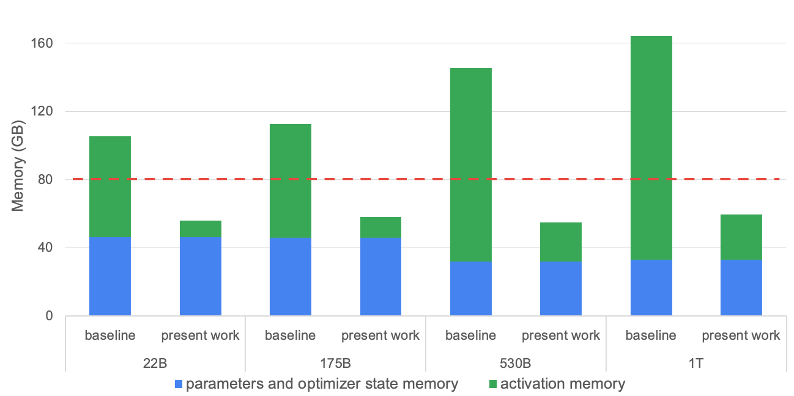
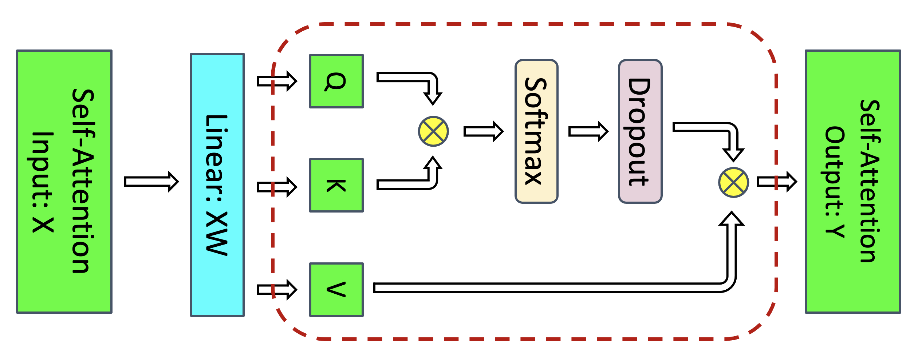
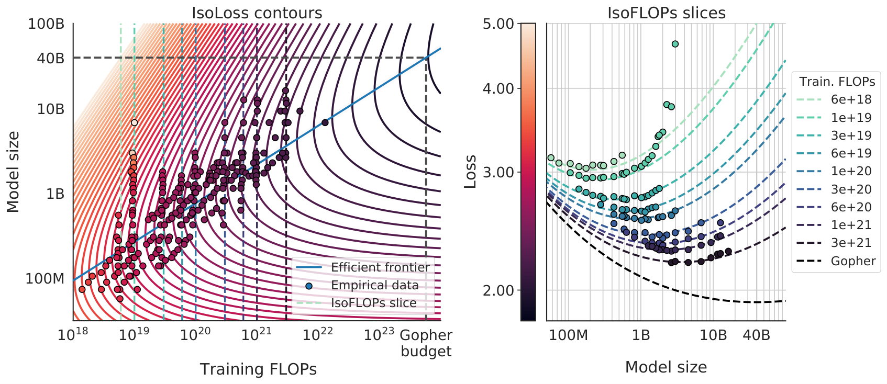
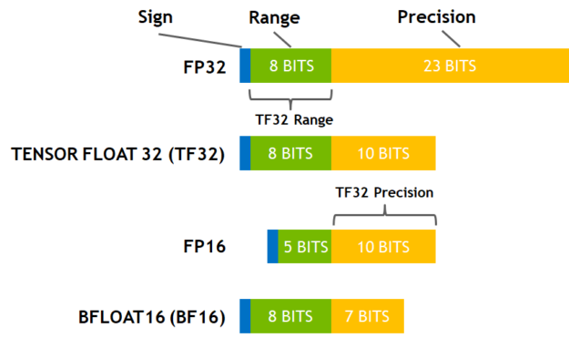
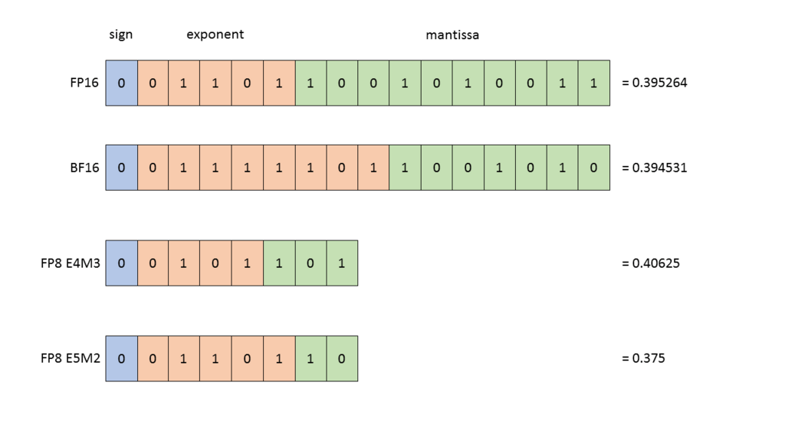
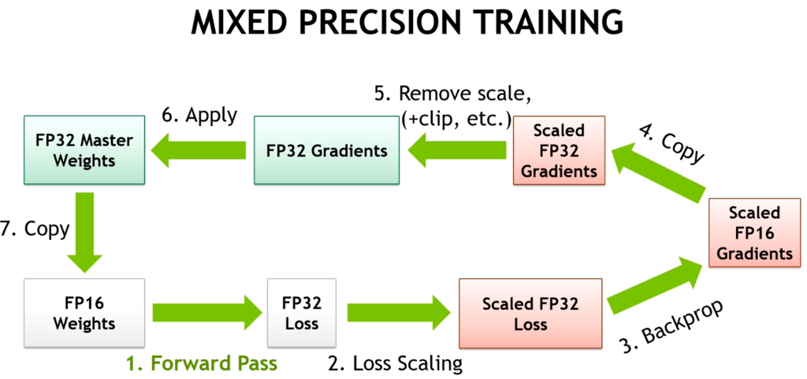
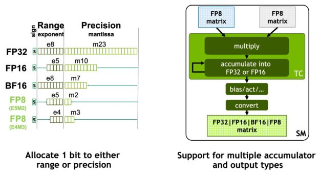
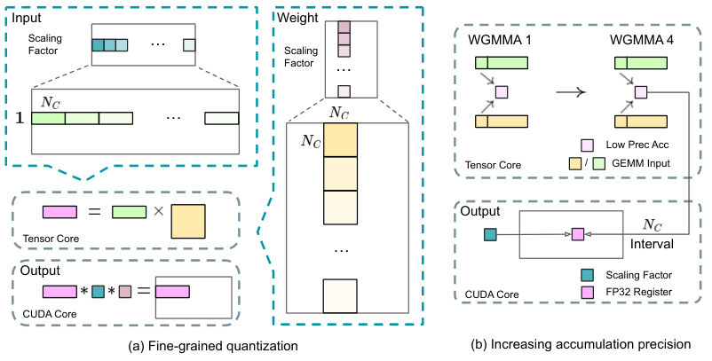
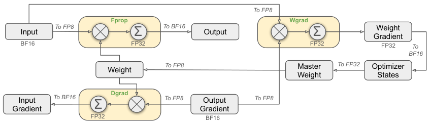

Training Arithmetic and Numerics: Going Deeper
Prerequisites
This chapter assumes you know the math of transformers and backprop. It does not assume any systems background, but a few foundation chapters make the memory and precision sections easier:
- Toolkit - running commands in a terminal and creating a Python virtual environment, which is all the "Running the code" section needs.
- Computer architecture - what accelerator memory, memory bandwidth and on-chip compute units are. This chapter's FLOP and MFU numbers are measured against them.
- Linux and OS - virtual memory and pages. You need these for the PyTorch caching allocator and
expandable_segmentssection. - Concurrency - asynchronous work queues and why a buffer freed on one queue cannot immediately be reused by another. This is the "stream" behaviour of the allocator.
- Distributed systems - data parallelism, sharding and collective operations (all-reduce and friends). They show up in the memory and batch-size sections.
- Transformer architectures - GQA, SwiGLU, RMSNorm, MoE. All the FLOP and activation formulas below are written for these variants.
- Accelerator execution model - tensor cores, the roofline and FlashAttention, which the MFU, recomputation and precision sections lean on.
- GPU software stack - what CUDA, cuBLAS and the driver are, if those names mean nothing yet.
- Collective communication internals - the alpha-beta model and ring all-reduce, behind the bf16 reduction and FSDP memory discussions.
Forward links (later chapters, not needed to follow this one): Inference arithmetic applies the same counting to serving a model.
This chapter goes below the rules of thumb in Software Tune Up For The Best Performance, Selecting Training Hyper-Parameters and Instabilities. It derives the constants those chapters quote and shows where they break. It also holds the reference material on data types: the dtype zoo and naming, TF32, FP8 and FP4 formats, integer quantization formats, and the fp32-accumulation rules. How the work is split across devices is covered in Model Parallelism: Derivations. What happens inside a single GPU kernel is covered in Accelerator Execution Model. How to measure where time goes on a real run is in Profiling and optimization. None of these topics is repeated here.
Every formula in this chapter comes with a small program that checks it. Numbers about Llama-sized models come from arithmetic (no GPU was used). Numbers about the tiny model are measurements made on a laptop CPU, and the text says which is which.
Running the code
Every Python block in this chapter is a complete file. They were run on macOS (Apple Silicon, CPU only) with PyTorch 2.15.0 and NumPy 2.5.4 in a throwaway virtual environment. A virtual environment (venv) is a private directory of Python packages, so nothing is installed system-wide:
python3 -m venv /tmp/arith-venv
/tmp/arith-venv/bin/pip install torch numpy sympy # sympy only for megatron_check.py
mkdir -p /tmp/arith-code && cd /tmp/arith-code
# save each block below under the file name in its first comment, then:
/tmp/arith-venv/bin/python count_flops.py
All blocks in this chapter are single-process. If you adapt one to run under torchrun with several processes, their print output will interleave, sometimes two ranks on one line. Two tiny tools in training/tools fix that by taking an exclusive file lock (fcntl.flock) around each print: printflock.py is an importable drop-in (from printflock import printflock as print), and multi-gpu-non-interleaved-print.py is the same wrapper plus a runnable NCCL example (torchrun --nproc_per_node 2 multi-gpu-non-interleaved-print.py). The lock only serializes processes on one node, which is where interleaving happens; output from different nodes arrives through the launcher line by line. Rank prefixes and per-rank log files are covered in Per-rank logs and rank-prefixed printing.
Several scripts import a tiny Llama-style model from tinylm.py. It has the same structure as Llama-3 (RMSNorm, GQA attention through PyTorch's fused scaled_dot_product_attention, SwiGLU MLP, untied embedding and head) but is small enough to run on a CPU in a fraction of a second. Save it first:
# tinylm.py
import torch, torch.nn as nn, torch.nn.functional as F
class Block(nn.Module):
def __init__(s, h, a, k, f):
super().__init__()
s.a, s.k, s.d = a, k, h // a
s.wq = nn.Linear(h, a * s.d, bias=False)
s.wk = nn.Linear(h, k * s.d, bias=False)
s.wv = nn.Linear(h, k * s.d, bias=False)
s.wo = nn.Linear(a * s.d, h, bias=False)
s.w1 = nn.Linear(h, f, bias=False) # gate
s.w3 = nn.Linear(h, f, bias=False) # up
s.w2 = nn.Linear(f, h, bias=False) # down
s.n1, s.n2 = nn.RMSNorm(h), nn.RMSNorm(h)
def forward(s, x): # (B, T, h)
B, T, h = x.shape
y = s.n1(x)
q = s.wq(y).view(B, T, s.a, s.d).transpose(1, 2) # (B, a, T, d)
k = s.wk(y).view(B, T, s.k, s.d).transpose(1, 2) # (B, k, T, d)
v = s.wv(y).view(B, T, s.k, s.d).transpose(1, 2) # (B, k, T, d)
o = F.scaled_dot_product_attention(q, k, v, is_causal=True, enable_gqa=True) # (B, a, T, d)
x = x + s.wo(o.transpose(1, 2).reshape(B, T, h)) # (B, T, h)
y = s.n2(x)
return x + s.w2(F.silu(s.w1(y)) * s.w3(y)) # (B, T, h)
class LM(nn.Module):
def __init__(s, V, h, L, a, k, f):
super().__init__()
s.emb = nn.Embedding(V, h)
s.blocks = nn.ModuleList(Block(h, a, k, f) for _ in range(L))
s.norm, s.head = nn.RMSNorm(h), nn.Linear(h, V, bias=False)
def forward(s, idx): # (B, T) int64
x = s.emb(idx) # (B, T, h)
for b in s.blocks:
x = b(x)
return s.head(s.norm(x)) # (B, T, V)
def flops_per_token(h, L, a, k, f, V, s, causal=False):
d = h // a
per_layer = 2*h*h + 2*h*k*d + 3*h*f # q, o, k, v, gate/up/down weight elements
n_mm = L*per_layer + h*V # matmul params incl. LM head, excl. embedding
attn = (6 if causal else 12) * L * s * h # QK^T and PV, fwd+bwd
return 6*n_mm + attn
Outputs pasted below are from one run. Timings on a shared laptop are noisy; arithmetic and FLOP counts are deterministic.
Notation
| Symbol | Meaning |
|---|---|
| b | micro-batch size (sequences) |
| s | sequence length (tokens) |
| h | hidden size (d_model) |
| L | number of layers |
| a | number of query heads |
| k | number of KV heads (GQA); g = k/a |
| d | head dimension, h = a d |
| f | MLP intermediate size (ffn_dim) |
| V | vocabulary size |
| t | tensor-parallel degree |
| N | parameter count |
| D | training tokens |
The two reference models (from their public config.json) are:
| Model | h | L | a | k | d | f | V | tied emb |
|---|---|---|---|---|---|---|---|---|
| Llama-3-8B | 4096 | 32 | 32 | 8 | 128 | 14336 | 128256 | no |
| Llama-3-70B | 8192 | 80 | 64 | 8 | 128 | 28672 | 128256 | no |
Units: parameter and optimizer memory is in GB (10^9 bytes), activation memory is in GiB (2^{30} bytes), and FLOP means a single multiply or add (1 MAC = 2 FLOP, see MACs vs FLOP). FLOP/s (with "/s") is a rate: FLOPs per second.
FLOPs of a decoder transformer
Why count FLOPs at all? Because the GPU's arithmetic rate is the one number you can't buy your way around. If you know how many FLOPs a training step needs, and how many FLOP/s the hardware can deliver, you know the best possible step time before writing any code. Every "how long will this run take" and "is my code slow" question starts here.
Per-matmul breakdown
A dense matmul (M \times K) \cdot (K \times N) costs 2MKN FLOP: each of the MN outputs is a dot product of length K, which is K multiplies and K adds. One token going through one layer of the forward pass therefore costs 2 \times (\text{number of weight elements it touches}) for every projection. The attention core adds a cost that grows with context length, because each token's query is compared against every earlier key.
| Operation | Weight shape | Forward FLOP per token per layer |
|---|---|---|
| Q proj | (h, ad) | 2h^2 |
| K, V proj | $(h, kd)$ x2 | 4hkd = 4gh^2 |
| scores QK^\top | - | 2sad = 2sh (full) |
| \operatorname{softmax}(S)\,V | - | 2sh (full) |
| out proj | (ad, h) | 2h^2 |
| SwiGLU gate, up, down | (h,f), (h,f), (f,h) | 6hf |
| LM head (once, not per layer) | (h, V) | 2hV |
| input embedding | gather | 0 |
Softmax, norms, RoPE, SiLU and residual adds are O(sh) or O(sa) elementwise work per token. Chinchilla's appendix counts softmax at 3as FLOP per token per layer, which is under 0.5% of the total at these shapes. Everyone drops it, and so does this chapter. These ops are memory-bandwidth bound: the time goes into reading and writing accelerator memory (HBM, the high-bandwidth DRAM stacked next to the GPU die), not into arithmetic. So they cost time but contribute almost no FLOPs, and that is one reason MFU can never reach 100%.
Here is the breakdown for Llama-3-8B at s = 8192, in GFLOP per token per layer, forward only:
# breakdown.py
h, a, k, f, s = 4096, 32, 8, 14336, 8192 # Llama-3-8B, 8k context
d = h // a
G = 1e9
rows = {
"q": 2*h*a*d,
"k+v": 2*2*h*k*d,
"o": 2*a*d*h,
"mlp": 2*3*h*f,
"scores": 2*s*a*d,
"attn*V": 2*s*a*d,
}
tot = sum(rows.values())
print(" | ".join(f"{n} {v/G:.4f}" for n, v in rows.items()))
print(f"mlp share {rows['mlp']/tot:.1%}, attention core share {(rows['scores']+rows['attn*V'])/tot:.1%}")
mha_kv = 2*2*h*a*d
print(f"GQA saves {(mha_kv-rows['k+v'])/G:.4f} GFLOP/token/layer = {(mha_kv-rows['k+v'])/(tot-rows['k+v']+mha_kv):.1%} of the MHA layer")
$ python breakdown.py
q 0.0336 | k+v 0.0168 | o 0.0336 | mlp 0.3523 | scores 0.0671 | attn*V 0.0671
mlp share 61.8%, attention core share 23.5%
GQA saves 0.0503 GFLOP/token/layer = 8.1% of the MHA layer
The MLP is 62% of the forward FLOPs of a layer even at 8k context. The attention core (scores + \text{attn} \cdot V) is 24% if counted without causal skipping.
Where 6N comes from
For a linear layer Y = XW with X \in \mathbb{R}^{T \times K} and W \in \mathbb{R}^{K \times N}:
Y = X @ W # (T, N) forward: 2*T*K*N
dX = dY @ W.T # (T, K) backward: 2*T*K*N (activation grad, passed to the previous layer)
dW = X.T @ dY # (K, N) backward: 2*T*K*N (weight grad, used by the optimizer)
The backward pass is two matmuls of the same size as the forward matmul. So the total is 3 \times 2 = 6 FLOP per weight element per token, and summing over all weight matrices gives 6N per token. The first layer does not need its dX, which saves a negligible amount. The rule holds only for parameters that take part in a matmul, which has two consequences:
- The input embedding is a gather (a table lookup: row i of the table for token id i). It costs zero forward FLOPs and a scatter-add in backward. Counting it in N overstates the work by 6Vh per token. For Llama-3-8B that is 6 \times 0.525\text{B} = 3.15\ \text{GFLOP} out of ~48, about 6.5%.
- The LM head is a real (h, V) matmul and must be counted. With tied embeddings it is the same tensor, so you count it once, as the head.
For an untied model, the right N for FLOP purposes is the non-embedding parameters plus the head. For Llama-3-8B that gives N' = 6.980\text{B} + 0.525\text{B} = 7.505\text{B} against a nominal 8.03B.
Checking the formula against PyTorch's FLOP counter
Formulas drift from code. PyTorch ships torch.utils.flop_counter.FlopCounterMode, which intercepts every operator that runs (forward and backward) and adds up a FLOP formula registered for each matmul-like op. Running it on the tiny model is the fastest way to find out whether your formula and your code agree:
# count_flops.py
import torch
from torch.utils.flop_counter import FlopCounterMode
from tinylm import LM, flops_per_token
cfg = dict(V=1000, h=256, L=4, a=8, k=2, f=704)
B, T = 2, 128
torch.manual_seed(0)
model = LM(**cfg)
idx = torch.randint(0, cfg["V"], (B, T)) # (B, T)
with FlopCounterMode(display=False) as fc:
model(idx).sum().backward()
counts = {str(op).split(".")[-1]: n for op, n in fc.get_flop_counts()["Global"].items()}
for op, n in counts.items():
print(f"{op:55s} {n:>15,}")
h, L, a, k, f, V = (cfg[x] for x in "hLakfV")
n_mm = L * (2*h*h + 2*h*k*(h//a) + 3*h*f) + h*V # matmul weights incl. head, excl. embedding
assert counts["mm"] == 6 * n_mm * B * T # 6N' is exact for the matmuls
attn_fwd = 4 * B * T * T * h * L # QK^T + PV over the full T x T
assert counts["_scaled_dot_product_flash_attention_for_cpu"] == attn_fwd
assert counts["_scaled_dot_product_flash_attention_for_cpu_backward"] == 2.5 * attn_fwd
print("6N' exact for matmuls; SDPA counted as full (non-causal) T x T, backward = 2.5 x forward")
print(f"total {fc.get_total_flops():,} vs 12-convention formula {flops_per_token(h,L,a,k,f,V,T)*B*T:,}")
$ python count_flops.py
mm 4,721,737,728
_scaled_dot_product_flash_attention_for_cpu 134,217,728
_scaled_dot_product_flash_attention_for_cpu_backward 335,544,320
6N' exact for matmuls; SDPA counted as full (non-causal) T x T, backward = 2.5 x forward
total 5,191,499,776 vs 12-convention formula 5,124,390,912
Three things this shows:
- The matmul count is 6N' exactly, to the FLOP. The embedding contributes nothing (it is not a matmul), and the head is counted.
FlopCounterModecounts the fused attention op over the full T \times T square even thoughis_causal=True. It knows nothing about kernels skipping masked tiles. Its count is the "12 convention" described next, not the work the kernel actually did.- It counts attention backward as 2.5x forward. That is the FlashAttention backward (explained under What recomputation adds), not the 2\times of the 6N rule. So the counter's total is 6N' + 14Lsh per token, a third convention. If you report MFU from
FlopCounterMode, say so.
The attention term, and which constant
Per layer, the two attention-core matmuls cost 4sh forward FLOP per token when every query attends to all s keys. Multiplying by 3 for forward plus backward gives, with no causal discount:
and, causal with the masked half skipped:
Both constants are in use, and reported MFU numbers are not comparable unless you know which one was used:
- 12: PaLM appendix B (6N + 12LHQT, in PaLM's notation H heads of dimension Q, so HQ = h, and T = s), Chinchilla appendix F (which counts both attention matmuls over the full s \times s), and the Megatron-LM paper's equation 3. Expanding Megatron's no-recompute form 72bsLh^2\left(1 + \frac{s}{6h} + \frac{V}{12Lh}\right) gives exactly 6 \cdot 12Lh^2 + 12Lsh + 6hV per token for a 4h-MLP, MHA model (the symbolic check is below). With activation recomputation the paper uses 96 instead of 72 and \frac{V}{16Lh}, which keeps the logit term at 6hV, i.e. the LM head is not recomputed.
- 6: Kaplan et al. (arXiv:2001.08361), table 1, gives C_\text{forward} = 2N + 2 n_\text{layer} n_\text{ctx} d_\text{attn}, which is 6Lsh for training. Numerically this equals "both attention matmuls with a causal discount". The table labels the row as the masking operation, so I am not certain this was the authors' reasoning.
# megatron_check.py
import sympy as sp
b, s, L, h, V = sp.symbols("b s L h V", positive=True)
megatron = 72 * b * s * L * h**2 * (1 + s / (6 * h) + V / (12 * L * h)) # Narayanan et al. eq. 3, no recompute
ours = (6 * 12 * L * h**2 + 12 * L * s * h + 6 * h * V) * b * s # 6N (12h^2 per layer, 4h MLP, MHA) + 12-conv attention + head
print("ratio:", sp.simplify(megatron / ours))
recompute = 96 * b * s * L * h**2 * (1 + s / (6 * h) + V / (16 * L * h))
print("recompute head term per token:", sp.simplify(sp.expand(recompute).coeff(V) / (b * s)))
$ python megatron_check.py
ratio: 1
recompute head term per token: 6*h
The 12 convention describes the math of full attention. The 6 convention is closer to what a causal FlashAttention kernel actually executes. If you use 12 with a causal kernel, your "MFU" includes about 6Lsh per token of work that was never done. At 8k context on the 8B model that is 11% of the claimed FLOPs.
Do kernels skip the causal half?
- FlashAttention-2 and -3 skip every key/value tile that lies entirely above the diagonal and apply the mask only on diagonal tiles. Executed work is therefore \approx 0.5 s^2 plus one diagonal band of tiles. The FlashAttention repository's own benchmark script counts causal FLOPs as 4bs^2ad / 2.
- PyTorch SDPA with
is_causal=Trueskips the masked tiles when it dispatches to the flash, cuDNN or memory-efficient backends. - FlexAttention (PyTorch's
torch.nn.attention.flex_attention, which compiles an attention kernel from a user-written Python mask/score function) skips the blocks that itsBlockMaskmarks as empty. - The eager "materialize S, add -\infty mask, softmax" path does the full s^2 work.
- Document masking for packed sequences, where each packed document attends only to itself, cuts executed attention FLOPs further: to \sum_i s_i^2 / 2 instead of s^2/2. A 128k window packed with 2k-token documents executes 64x fewer attention FLOPs than the causal estimate. Use the masked count if you want MFU to reflect real work.
You can see the skipping as wall-clock time even on a CPU. The causal call should take roughly half as long as the non-causal one at long sequence length, if the backend skips tiles:
# causal_skip.py
import time, torch, torch.nn.functional as F
torch.manual_seed(0)
q, k, v = (torch.randn(1, 8, 4096, 64) for _ in range(3)) # (B, a, s, d)
def best(fn, n=5):
fn(); t = float("inf")
for _ in range(n):
t0 = time.perf_counter(); fn(); t = min(t, time.perf_counter() - t0)
return t
full = best(lambda: F.scaled_dot_product_attention(q, k, v))
causal = best(lambda: F.scaled_dot_product_attention(q, k, v, is_causal=True))
print(f"s=4096: full {full*1e3:.0f} ms, causal {causal*1e3:.0f} ms, ratio {causal/full:.2f}")
$ python causal_skip.py
s=4096: full 28 ms, causal 19 ms, ratio 0.69
On this CPU backend (torch 2.15) causal is clearly faster than full, which means masked blocks are skipped. The ratio is not exactly 0.5 because diagonal tiles are still computed and the timing is noisy. This is one run on a busy laptop, so treat the exact ratio as an anecdote.
# packed_docs.py
s, doc = 131072, 2048
causal = s * s / 2 # attention score elements executed, causal
doc_masked = (s // doc) * doc * doc / 2 # each packed document attends only to itself
print(f"causal {causal:.3e} doc-masked {doc_masked:.3e} ratio {causal / doc_masked:.0f}x")
$ python packed_docs.py
causal 8.590e+09 doc-masked 1.342e+08 ratio 64x
GQA
GQA (grouped-query attention: several query heads share one K/V head) shrinks only the K and V projections, from 4h^2 to 4gh^2. The attention core is unchanged. Each of the a query heads still takes a dot product against s keys of dimension d, so scores plus \text{attn} \cdot V remain 4sad = 4sh regardless of k. GQA is a memory and KV-bandwidth optimization, not a FLOP optimization: it shrinks the KV cache, the stored keys and values that text generation re-reads for every new token (sized for serving in Inference arithmetic). For Llama-3-8B, going from MHA to k=8 removes 0.050 GFLOP of forward work per token per layer: 8.1% of the MHA layer's forward FLOPs at s = 8192, or 8.8% measured against the GQA layer (the breakdown.py output above).
The same thing measured with FlopCounterMode on the tiny model, plus the cost of full activation recomputation (re-running every block's forward during backward, explained below):
# gqa_recompute.py
import torch
from torch.utils.checkpoint import checkpoint
from torch.utils.flop_counter import FlopCounterMode
from tinylm import LM
def count(model, idx, ckpt=False):
if ckpt: # wrap every block in activation checkpointing
for b in model.blocks:
b._fwd = b.forward
b.forward = (lambda bb: lambda x: checkpoint(bb._fwd, x, use_reentrant=False))(b)
with FlopCounterMode(display=False) as fc:
model(idx).sum().backward()
return fc.get_total_flops()
torch.manual_seed(0)
idx = torch.randint(0, 1000, (2, 128)) # (B, T)
base = dict(V=1000, h=256, L=4, a=8, f=704)
mha = count(LM(k=8, **base), idx)
gqa = count(LM(k=2, **base), idx)
print(f"MHA k=8: {mha:,} GQA k=2: {gqa:,} saved {1-gqa/mha:.1%}")
full = count(LM(k=2, **base), idx, ckpt=True)
print(f"full recompute: {full:,} ratio to no-recompute {full/gqa:.3f}")
$ python gqa_recompute.py
MHA k=8: 5,795,479,552 GQA k=2: 5,191,499,776 saved 10.4%
full recompute: 6,399,459,328 ratio to no-recompute 1.233
The tiny model has h = 256, so attention and K/V are a larger share than at Llama scale and the GQA saving looks bigger. The recompute ratio of 1.23 sits below the textbook 4/3 because the head (which is not inside a checkpointed block) is not re-run, and because attention backward is 2.5x forward rather than 2x.
MoE: active FLOPs
For a mixture-of-experts layer with E experts and top-r routing, each token passes through r expert MLPs plus a router matmul costing 2hE. The FLOP count uses the active parameters (the ones a single token actually multiplies against); the last term is the router, usually under 0.1%:
| Model | total params | active params | source |
|---|---|---|---|
| Mixtral 8x7B | 46.7B | 12.9B | Mixtral paper, arXiv:2401.04088 |
| DeepSeek-V3 | 671B | 37B | arXiv:2412.19437 |
# moe_flops.py
h, E, r, f_e = 7168, 256, 8, 2048 # DeepSeek-V3-like: 256 experts, top-8, expert ffn 2048
router = 2 * h * E # forward, per token per MoE layer
experts = r * 2 * 3 * h * f_e # r SwiGLU experts, forward
print(f"router {router/1e6:.1f} MFLOP, experts {experts/1e6:.0f} MFLOP, router share {router/(router+experts):.2%}")
$ python moe_flops.py
router 3.7 MFLOP, experts 705 MFLOP, router share 0.52%
The router share at these shapes is 0.5% of the MoE MLP, smaller still once attention and the shared expert are included.
The gap between MFU and HFU (hardware FLOPs utilization: everything the GPU actually executed, defined properly in the next section) is larger for MoE than for dense models. Capacity-factor padding (with C > 1 each expert's buffer is padded to C \cdot \text{tokens}/E) executes FLOPs on padding. Dropped tokens execute fewer FLOPs than the model math implies. Grouped GEMMs (one kernel launch that runs many small matmuls of different sizes) on small, uneven per-expert batches run well below the dense matmul peak. Only 6N_\text{active} belongs in the MFU numerator.
Worked numbers at s = 8192
| Llama-3-8B | Llama-3-70B | |
|---|---|---|
| N (all params) | 8.030B | 70.554B |
| N' (non-embedding + head) | 7.505B | 69.502B |
| 6N (naive) | 48.18 GF | 423.32 GF |
| 6N' | 45.03 GF | 417.01 GF |
| attention, 12 convention | 12.88 GF | 64.42 GF |
| attention, 6 convention (causal) | 6.44 GF | 32.21 GF |
| total, 12 convention | 57.91 GF | 481.43 GF |
| total, causal | 51.47 GF | 449.22 GF |
| attention share (12 / causal) | 22.2% / 12.5% | 13.4% / 7.2% |
(GF = GFLOP per token, training, forward plus backward.)
Attention's share depends on s/h, not on N. The 70B model has twice the h, so the same 8k context costs it half the relative attention share.
The script that produces the table (it reuses flops_per_token from tinylm.py and also prints the executed-FLOP numbers used in the next section):
# worked.py
from tinylm import flops_per_token
models = {"Llama-3-8B": (4096, 32, 32, 8, 14336, 128256), "Llama-3-70B": (8192, 80, 64, 8, 28672, 128256)}
s, G = 8192, 1e9
for name, (h, L, a, k, f, V) in models.items():
d = h // a
n_layer = 2*h*h + 2*h*k*d + 3*h*f + 2*h # + 2 RMSNorm gains
N = L*n_layer + h + 2*V*h # + final norm, untied emb + head
Np = L*(2*h*h + 2*h*k*d + 3*h*f) + h*V # matmul params (FLOP-relevant)
a12, a6 = 12*L*s*h, 6*L*s*h
print(f"{name}: N={N/G:.3f}B N'={Np/G:.3f}B 6N={6*N/G:.2f} 6N'={6*Np/G:.2f} "
f"attn12={a12/G:.2f} attn6={a6/G:.2f} total12={(6*Np+a12)/G:.2f} causal={(6*Np+a6)/G:.2f} "
f"share={a12/(6*Np+a12):.1%}/{a6/(6*Np+a6):.1%}")
assert abs(flops_per_token(h, L, a, k, f, V, s) - (6*Np + a12)) < 1
exe = 8*Np + 2*L*s*h*(1 + 1 + 2.5) # full recompute + causal FA, head not recomputed
exe = exe - 2*h*V # head forward is not re-run
print(f" executed (full recompute, causal FA) = {exe/G:.2f} GF, ratio {exe/(6*Np+a12):.3f}")
$ python worked.py
Llama-3-8B: N=8.030B N'=7.505B 6N=48.18 6N'=45.03 attn12=12.88 attn6=6.44 total12=57.91 causal=51.47 share=22.2%/12.5%
executed (full recompute, causal FA) = 68.65 GF, ratio 1.185
Llama-3-70B: N=70.554B N'=69.502B 6N=423.32 6N'=417.01 attn12=64.42 attn6=32.21 total12=481.43 causal=449.22 share=13.4%/7.2%
executed (full recompute, causal FA) = 602.23 GF, ratio 1.251
MFU and HFU, properly
MFU (model FLOPs utilization) is the fraction of the hardware's peak arithmetic rate that went into the FLOPs the model mathematically needs. HFU (hardware FLOPs utilization) counts everything the hardware executed, including recomputation. MFU vs HFU gives the definitions. The precise version is:
Model FLOP per token comes from the table above. You have to choose the attention convention and say which one you chose. Executed FLOP per token adds everything the implementation actually runs.
What recomputation adds
Activation recomputation (also called activation checkpointing) means throwing away a layer's intermediate tensors after its forward pass and re-running that forward during backward when they are needed. It trades FLOPs for memory.
| Scheme | Executed FLOP per token (per layer, excluding head) |
|---|---|
| none | 6 n_\text{layer} + 12sh (math) |
| FlashAttention backward | attention backward is 2.5x forward, not 2x |
| selective recompute (Korthikanti; attention core only) | +\,4sh (one more attention-core forward) |
| full recompute (every layer's forward re-run) | +\,2 n_\text{layer} + 4sh, i.e. ~4/3 of the matmul work |
The 2.5x for FlashAttention has a simple cause. The forward pass runs 2 matmuls (S = QK^\top, O = PV). The backward pass runs 5: it recomputes S, then computes dV = P^\top dO, dP = dO\,V^\top, dQ = dS\,K and dK = dS^\top Q. That is 5/2 = 2.5x the forward attention matmul work, and FlashAttention's own benchmark uses exactly this factor (so does FlopCounterMode, as measured above). So FlashAttention is selective recomputation built into the kernel. Korthikanti's selective scheme recomputes the attention core because storing s^2 tensors is expensive. FlashAttention never stores them. With FlashAttention, "selective recompute" in the Megatron sense is already happening and should not be counted twice.
For causal attention, all of these attention terms are halved. Executed FLOPs per token with full recompute, causal FlashAttention, and the head not recomputed (the attention terms are forward, re-forward and backward, each causal-halved; the head runs once):
| Llama-3-8B | Llama-3-70B | |
|---|---|---|
| executed, full recompute + causal FA | 68.65 GF | 602.23 GF |
| ratio to 12-convention model FLOPs | 1.185 | 1.251 |
(Output of worked.py above. An earlier version of this chapter wrote 8N' here, which silently recomputes the head and gives 69.70 / 604.33 GF.)
So with full recompute, \text{HFU} \approx (1.19\text{-}1.25) \times \text{MFU} (12 convention). The ratio is lower than the textbook 4/3 because the 12 convention counts causal attention FLOPs that the kernel does not execute, while HFU adds the recompute FLOPs that it does.
MFU from a measured tokens/s
Inverting the formula gives the throughput a target MFU requires. With H100 SXM dense bf16 peak = 989.4 TFLOP/s (derivation in How To Calculate Theoretical TFLOPS) and the 12 convention at s = 8192:
# mfu.py
PEAK_H100, PEAK_A100 = 989.4e12, 312e12
def mfu(tokens_per_sec_global, n_gpus, flop_per_token, peak=PEAK_H100):
return tokens_per_sec_global / n_gpus * flop_per_token / peak
def tokens_needed(target_mfu, flop_per_token, peak=PEAK_H100):
return target_mfu * peak / flop_per_token
for name, fpt in [("Llama-3-8B", 57.91e9), ("Llama-3-70B", 481.43e9)]:
print(f"{name}: 40% MFU needs {tokens_needed(0.40, fpt):,.0f} tok/s/GPU")
print(f"example: 6.5M tok/s on 1024 GPUs, 8B -> MFU {mfu(6.5e6, 1024, 57.91e9):.1%}")
$ python mfu.py
Llama-3-8B: 40% MFU needs 6,834 tok/s/GPU
Llama-3-70B: 40% MFU needs 822 tok/s/GPU
example: 6.5M tok/s on 1024 GPUs, 8B -> MFU 37.2%
The denominator has two choices, and they mean different things. The spec peak (989) measures distance from a number no kernel reaches. The maximum achievable matmul FLOPS for H100 SXM is 853 bf16 TFLOPS in this repo's measurements (86.2% of spec), and MFU against that number measures distance from what your matmuls could realistically do. Report MFU against the spec peak, since that is the convention, and use the ratio to maximum achievable matmul FLOPS (MAMF) internally to tell how much is left to gain.
You can practise the whole measurement loop on a CPU: measure the achievable matmul rate, time a training step, divide the counted FLOPs by the step time.
# cpu_mfu.py
import time, torch
from torch.utils.flop_counter import FlopCounterMode
from tinylm import LM
def bench(fn, iters=10): # best-of-iters: robust to a busy machine
fn() # warm-up
best = float("inf")
for _ in range(iters):
t = time.perf_counter(); fn(); best = min(best, time.perf_counter() - t)
return best
torch.manual_seed(0)
A, Bm = torch.randn(2048, 2048), torch.randn(2048, 2048)
peak = 2 * 2048**3 / bench(lambda: A @ Bm) # "achievable peak" of this CPU, fp32
model = LM(V=1000, h=256, L=4, a=8, k=2, f=704)
idx = torch.randint(0, 1000, (8, 256)) # (B, T)
step = lambda: model(idx).sum().backward()
with FlopCounterMode(display=False) as fc:
step()
dt = bench(step)
print(f"matmul peak {peak/1e9:.0f} GFLOP/s | step {dt*1e3:.1f} ms | "
f"{fc.get_total_flops()/dt/1e9:.0f} GFLOP/s | MFU vs matmul peak {fc.get_total_flops()/dt/peak:.0%}")
$ python cpu_mfu.py
matmul peak 1553 GFLOP/s | step 71.1 ms | 637 GFLOP/s | MFU vs matmul peak 41%
Run it three times and you will get three different answers on a laptop that is doing other work (I saw "MFU" between 21% and 55% across runs, because the peak measurement itself swung by 2.5x). The lesson carries over to clusters: measure peak and step time under the same conditions, repeat, and take the best-of-N or median, never a single sample.
Implied MFU from published GPU-hours
When a paper reports GPU-hours and token counts, you can recover its MFU:
# implied_mfu.py
PEAK_H100, PEAK_A100 = 989.4e12, 312e12
def implied_mfu(gpu_hours, tokens, flop_per_token, peak):
return tokens * flop_per_token / (gpu_hours * 3600 * peak)
N, D, s, L, h = 6.74e9, 2e12, 4096, 32, 4096 # Llama 2 7B
print(f"Llama 2 7B: 6N {implied_mfu(184320, D, 6*N, PEAK_A100):.1%}, "
f"6N+12Lsh {implied_mfu(184320, D, 6*N + 12*L*s*h, PEAK_A100):.1%}")
print(f"DeepSeek-V3: bf16 peak {implied_mfu(2.664e6, 14.8e12, 6*37e9, 989e12):.1%}, "
f"fp8 peak {implied_mfu(2.664e6, 14.8e12, 6*37e9, 1979e12):.1%}")
$ python implied_mfu.py
Llama 2 7B: 6N 39.1%, 6N+12Lsh 45.3%
DeepSeek-V3: bf16 peak 34.6%, fp8 peak 17.3%
- Llama 2 7B (arXiv:2307.09288): 184,320 A100-80GB GPU-hours for 2T tokens, N = 6.74\text{B}, s = 4096. \frac{6ND}{\text{hours} \times 3600 \times 312 \times 10^{12}} = 39.1\%. With the 12-convention attention term the figure is 45.3%. That is the same run quoted at two MFUs depending only on convention.
- DeepSeek-V3 (arXiv:2412.19437): 2.664M H800 GPU-hours (the H800 is the export variant of the H100: same compute, reduced NVLink bandwidth) for pre-training on 14.8T tokens, 37B active. 6 \times 37 \times 10^9 \times 14.8 \times 10^{12} = 3.29 \times 10^{24} FLOP, which is 34.6% of a 989 TF bf16 peak or 17.3% of the 1979 TF FP8 peak. The attention FLOPs (MLA, 61 layers) are excluded, which understates the figure. Also, the H800's reduced interconnect bandwidth makes communication a different bottleneck than on an H100. Treat this as a lower bound with roughly ±20% uncertainty that comes from the convention alone.
Activation memory
During the forward pass, autograd keeps some intermediate tensors alive because the backward pass needs them (for example, dW = X^\top dY needs the layer's input X). Those saved tensors are the activations, and at long context they are usually the largest thing in GPU memory.
Anatomy of Model's Memory Usage measures "copies of hidden_states" empirically. This section derives what autograd actually saves for backward, term by term, and then measures it. The two quantities differ. The measured coefficient in that chapter is peak working memory inside one layer's forward, temporaries included. The coefficient below is what stays resident after the forward pass until backward runs.
Why activations dominate at scale - memory per GPU split into parameters+optimizer state and activations (Korthikanti et al.):

(source)
Korthikanti et al., derived
Reducing Activation Recomputation in Large Transformer Models (arXiv:2205.05198) counts bytes saved per layer for a GPT block with a 4h GeLU MLP, MHA, LayerNorm, dropout, 16-bit activations and 1-byte dropout masks:
| Saved tensor | Bytes |
|---|---|
| QKV projection input | 2sbh |
| Q and K (for QK^\top) | 4sbh |
| softmax output (for its backward) | 2as^2b |
| attention dropout mask | as^2b |
| attention dropout output (for PV) | 2as^2b |
| V | 2sbh |
| out-proj input | 2sbh |
| out-proj dropout mask | sbh |
| attention subtotal | \mathbf{11sbh + 5as^2b} |
| fc1 input | 2sbh |
| GeLU input | 8sbh |
| GeLU output (fc2 input) | 8sbh |
| MLP dropout mask | sbh |
| MLP subtotal | \mathbf{19sbh} |
| 2 x LayerNorm input | 4sbh |
| total | \mathbf{sbh\,(34 + 5as/h)} |
The self-attention block; the red dashed region is what selective recompute drops (the 5as/h term):

(source)
Under parallelism, with t the tensor-parallel degree (TP: each layer's weight matrices are split across t GPUs, which then exchange partial results):
| Scheme | Bytes per layer | Note |
|---|---|---|
| TP only | sbh\left(10 + \frac{24}{t} + \frac{5as}{ht}\right) | norms, dropout, linear inputs replicated |
| TP + sequence parallel (SP) | sbh\left(\frac{34}{t} + \frac{5as}{ht}\right) | SP shards the replicated regions along s |
| TP + SP + selective recompute | \frac{34\,sbh}{t} | attention core recomputed |
| full recompute | 2sbh | only the layer input is kept |
In SP, the inputs to the column-parallel linears are stored sharded and re-gathered across the TP group in backward (Korthikanti section 4.2.2). That is why the whole formula divides by t. The communication cost is covered in Model Parallelism: Derivations.
The quadratic term is the one that hurts. At s = 8192, a = 32, h = 4096, the value of 5as/h is 320, nearly 10x the linear coefficient 34. Llama-3-8B under the literal Korthikanti formula at b = 1, s = 8192 would need 11.06 GiB per layer and 354 GiB in total.
# korthikanti.py
s, b, h, a, L = 8192, 1, 4096, 32, 32
per_layer = s * b * h * (34 + 5 * a * s / h) # bytes, Korthikanti et al. eq. (no parallelism)
print(f"5as/h = {5*a*s/h:.0f}; per layer {per_layer/2**30:.2f} GiB; {L} layers {L*per_layer/2**30:.0f} GiB")
$ python korthikanti.py
5as/h = 320; per layer 11.06 GiB; 32 layers 354 GiB
What FlashAttention, no-dropout, SwiGLU, GQA and RMSNorm change
- FlashAttention never stores P. It saves Q, K, V, O and the per-row log-sum-exp (4bas bytes in fp32, which is \frac{4a}{h} \approx 0.03\,sbh). Q, K and V are already counted above, and O is the out-proj input. So all of 5as^2b disappears and the layer becomes linear in s.
- Dropout = 0 (standard for LLM pre-training) removes both sbh masks. A GPT block with FlashAttention and no dropout therefore needs 32sbh.
- GQA shrinks K and V from 4sbh to 4g\,sbh.
- SwiGLU with eager PyTorch saves the gate pre-activation (for SiLU backward),
silu(gate)andup(for the multiply's backward), and the product (fordown's weight gradient). That is four tensors of shape (b, s, f), or 8sbf bytes. A fused SwiGLU that recomputessilusaves 6sbf. One that also recomputes the product from gate and up saves 4sbf. - RMSNorm, fused: input only (2sbh) plus a (b, s) fp32
rstd. Unfused implementations save much more; the measurement below gives exact numbers.
For a Llama block (fused norms, FlashAttention, no dropout):
Measuring saved activations on a tiny model
torch.autograd.graph.saved_tensors_hooks lets you intercept every tensor autograd saves for backward. Counting the unique storages it sees (a storage is the underlying memory buffer; several tensor views can share one), minus the parameters, gives the exact resident activation bytes. Here it is on one bf16 Llama-shaped block with g = 1/4 and f/h = 3.5, the same ratios as Llama-3-8B, with three RMSNorm implementations:
# actmem.py
import torch, torch.nn as nn
from tinylm import Block
def saved_tensors(module, x):
"""What autograd keeps alive for backward: {storage_ptr: (bytes, dtype, shape, saved_by)}, params excluded."""
params = {p.untyped_storage().data_ptr() for p in module.parameters()}
seen = {}
def pack(t):
ptr = t.untyped_storage().data_ptr()
if ptr not in params and ptr not in seen:
by = type(t.grad_fn).__name__ if t.grad_fn else "leaf/aux"
seen[ptr] = (t.untyped_storage().nbytes(), t.dtype, tuple(t.shape), by)
return t
with torch.autograd.graph.saved_tensors_hooks(pack, lambda t: t):
module(x)
return seen
class HFRMSNorm(nn.Module): # HuggingFace LlamaRMSNorm, eager
def __init__(s, h, eps=1e-6):
super().__init__(); s.weight = nn.Parameter(torch.ones(h)); s.eps = eps
def forward(s, x):
dt = x.dtype
x = x.to(torch.float32)
x = x * torch.rsqrt(x.pow(2).mean(-1, keepdim=True) + s.eps)
return s.weight * x.to(dt)
class FusedishRMSNorm(nn.Module): # stand-in for a fused kernel: saves only its input
class Fn(torch.autograd.Function):
@staticmethod
def forward(ctx, x, w):
ctx.save_for_backward(x, w) # x: (b, s, h) bf16, recompute rstd in backward
xf = x.float()
return (xf * torch.rsqrt(xf.pow(2).mean(-1, keepdim=True) + 1e-6)).to(x.dtype) * w
@staticmethod
def backward(ctx, gy):
x, w = ctx.saved_tensors
with torch.enable_grad():
x_, w_ = x.detach().requires_grad_(), w.detach().requires_grad_()
xf = x_.float()
y = (xf * torch.rsqrt(xf.pow(2).mean(-1, keepdim=True) + 1e-6)).to(x.dtype) * w_
return torch.autograd.grad(y, (x_, w_), gy)
def __init__(s, h):
super().__init__(); s.weight = nn.Parameter(torch.ones(h))
def forward(s, x):
return s.Fn.apply(x, s.weight)
h, a, k, f = 512, 8, 2, 1792 # g = k/a = 1/4, f/h = 3.5, like Llama-3-8B
b, s = 3, 160 # b*s = 480, distinct from h, f
sbh = s * b * h
torch.manual_seed(0)
x = torch.randn(b, s, h, dtype=torch.bfloat16, requires_grad=True) # (b, s, h)
for name, norm in [("nn.RMSNorm (CPU)", None), ("HF eager RMSNorm", HFRMSNorm), ("fused-style norm", FusedishRMSNorm)]:
blk = Block(h, a, k, f)
if norm:
blk.n1, blk.n2 = norm(h), norm(h)
seen = saved_tensors(blk.to(torch.bfloat16), x)
total = sum(v[0] for v in seen.values())
print(f"{name}: {total/sbh:.2f} * sbh")
if name.startswith("nn."):
for nbytes, dt, shp, by in seen.values():
print(f" {str(dt)[6:]:9s} {str(shp):17s} {nbytes/sbh:5.2f} sbh saved for {by}")
g = k / a
print(f"chapter formula (fused norms, eager SwiGLU): 12 + 4g + 8f/h = {12 + 4*g + 8*f/h:.2f} sbh")
$ python actmem.py
nn.RMSNorm (CPU): 53.08 * sbh
float32 (3, 160, 512) 4.00 sbh saved for ToCopyBackward0
float32 (3, 160, 1) 0.01 sbh saved for RsqrtBackward0
float32 (3, 160, 512) 4.00 sbh saved for MulBackward0
bfloat16 (480, 512) 2.00 sbh saved for ViewBackward0
bfloat16 (3, 2, 160, 64) 0.50 sbh saved for TransposeBackward0
bfloat16 (3, 8, 160, 64) 2.00 sbh saved for TransposeBackward0
bfloat16 (3, 2, 160, 64) 0.50 sbh saved for TransposeBackward0
float32 (3, 8, 160) 0.06 sbh saved for leaf/aux
bfloat16 (3, 8, 160, 64) 2.00 sbh saved for ScaledDotProductFlashAttentionForCpuBackward0
float32 (3, 160, 512) 4.00 sbh saved for ToCopyBackward0
float32 (3, 160, 1) 0.01 sbh saved for RsqrtBackward0
float32 (3, 160, 512) 4.00 sbh saved for MulBackward0
bfloat16 (480, 512) 2.00 sbh saved for ViewBackward0
bfloat16 (3, 160, 1792) 7.00 sbh saved for UnsafeViewBackward0
bfloat16 (3, 160, 1792) 7.00 sbh saved for UnsafeViewBackward0
bfloat16 (3, 160, 1792) 7.00 sbh saved for SiluBackward0
bfloat16 (480, 1792) 7.00 sbh saved for ViewBackward0
HF eager RMSNorm: 49.08 * sbh
fused-style norm: 41.06 * sbh
chapter formula (fused norms, eager SwiGLU): 12 + 4g + 8f/h = 41.00 sbh
What the measurement says:
- With a norm that saves only its input, the block saves 41.06 sbh, matching the formula's 41.00 plus the 0.06 sbh fp32 log-sum-exp that SDPA keeps. The per-tensor listing confirms every term: 7 sbh tensors are the (b, s, f) SwiGLU intermediates, 0.5 sbh are the GQA K and V, and the attention output is counted once because the CPU SDPA writes it in a layout where
transpose(1, 2).reshape(...)is a free view. nn.RMSNormon CPU in torch 2.15 is not fused. It upcasts to fp32 and saves the fp32 input (4 sbh) and the fp32 normalized tensor (4 sbh): 8 sbh per norm instead of 2, +12 sbh per block. Whether CUDA dispatches to a fused kernel depends on your PyTorch version; run this script on your GPU before trusting either number (untested here).- The HuggingFace-style eager norm saves fp32 input (4 sbh) plus the bf16 normalized tensor (2 sbh, for the weight gradient): 6 sbh per norm, +8 sbh per block. An earlier version of this chapter guessed ~10 sbh per norm; the measured number is 6.
Worked example, b = 1, s = 8192, bf16
| coef | per layer | all layers | TP=8 + SP, per GPU | |
|---|---|---|---|---|
| 8B eager SwiGLU (g = 1/4, f/h = 3.5) | 41.0 | 1.28 GiB | 41.0 GiB | 5.1 GiB |
| 8B fused-silu | 34.0 | 1.06 GiB | 34.0 GiB | 4.25 GiB |
| 8B fully fused | 27.0 | 0.84 GiB | 27.0 GiB | 3.4 GiB |
| 70B eager (g = 1/8, f/h = 3.5) | 40.5 | 2.53 GiB | 202.5 GiB | 25.3 GiB |
| 70B fused-silu | 33.5 | 2.09 GiB | 167.5 GiB | 20.9 GiB |
| 70B Korthikanti literal, TP=8 + SP | - | 2.77 GiB | 221.2 GiB | - |
A calculator that reproduces the table, so you can plug in your own model:
# act_calc.py
def act_coef(g, f_over_h, c): # Llama block, fused norms, FlashAttention, no dropout
return 12 + 4 * g + c * f_over_h
GiB = 2**30
s, b = 8192, 1
for name, h, L, g in [("8B", 4096, 32, 1/4), ("70B", 8192, 80, 1/8)]:
for label, c in [("eager", 8), ("fused-silu", 6), ("fully fused", 4)]:
coef = act_coef(g, 3.5, c)
per_layer = coef * s * b * h
print(f"{name:3s} {label:11s} coef {coef:4.1f} per layer {per_layer/GiB:.2f} GiB "
f"all {L*per_layer/GiB:6.1f} GiB TP=8+SP {L*per_layer/8/GiB:5.1f} GiB")
print(f"{name:3s} full recompute: {2*s*b*h*L/GiB:.1f} GiB")
h, L, a = 8192, 80, 64
kor = s * b * h * (34 / 8 + 5 * a * s / (h * 8))
print(f"70B Korthikanti literal TP=8+SP: {kor/GiB:.2f} GiB/layer, {L*kor/GiB:.1f} GiB")
print(f"logits bf16 + fp32 upcast: {s*128256*6/GiB:.2f} GiB")
$ python act_calc.py
8B eager coef 41.0 per layer 1.28 GiB all 41.0 GiB TP=8+SP 5.1 GiB
8B fused-silu coef 34.0 per layer 1.06 GiB all 34.0 GiB TP=8+SP 4.2 GiB
8B fully fused coef 27.0 per layer 0.84 GiB all 27.0 GiB TP=8+SP 3.4 GiB
8B full recompute: 2.0 GiB
70B eager coef 40.5 per layer 2.53 GiB all 202.5 GiB TP=8+SP 25.3 GiB
70B fused-silu coef 33.5 per layer 2.09 GiB all 167.5 GiB TP=8+SP 20.9 GiB
70B fully fused coef 26.5 per layer 1.66 GiB all 132.5 GiB TP=8+SP 16.6 GiB
70B full recompute: 10.0 GiB
70B Korthikanti literal TP=8+SP: 2.77 GiB/layer, 221.2 GiB
logits bf16 + fp32 upcast: 5.87 GiB
With full recompute, the resident cost is 2sbhL: 2.0 GiB for the 8B model and 10.0 GiB for the 70B model, plus one layer's working set during recompute.
The LM head adds sV(2 + 4) bytes for bf16 logits plus their fp32 upcast: 5.87 GiB at s = 8192, for both models. That is independent of h and larger than the entire checkpointed residual stream of the 8B model. Chunked or fused cross-entropy (Liger kernel; "Cut Your Losses in Large-Vocabulary Language Models", arXiv:2411.09009) never materializes the full (s, V) tensor.
With pipeline parallelism (PP: consecutive groups of layers live on different GPUs and micro-batches flow through them like an assembly line) under the 1F1B schedule (one-forward-one-backward: once the pipeline is full, each stage alternates one micro-batch's forward with another's backward), stage 1 of p pipeline stages holds activations for p in-flight micro-batches of L/p layers each, i.e. about one full model's worth. The derivation, and a simulator that prints the in-flight count, are in Model Parallelism: Derivations.
FP8 linears in Transformer Engine (TE: NVIDIA's library of drop-in PyTorch layers that run their matmuls in FP8; mechanics below) save their inputs in FP8, which halves the "linear input" terms (QKV input, out-proj input, gate/up input, down input). DeepSeek-V3 goes further: it caches some activations in FP8 and recomputes SwiGLU.
Total memory and the caching allocator
Static, per parameter
"Static" memory is what exists for the whole run regardless of batch size: weights, gradients and optimizer state.
| Component | Mixed bf16 + AdamW | Notes |
|---|---|---|
| fp32 master weights | 4 | |
| bf16 working weights | 2 | often only the current layer, under FSDP/ZeRO-3 |
| gradients | 4 (fp32) or 2 (bf16) | fp32 if accumulated in fp32 |
| Adam m, v | 8 | fp32 |
| total | 16-18 |
ZeRO and FSDP are data parallelism that shards these per-parameter states across the \text{DP} replicas instead of replicating them. ZeRO-1 shards optimizer states, ZeRO-2 also shards gradients, and ZeRO-3/FSDP also shards weights, gathering each layer just before it runs. Llama-3-8B at 16-18 B/param is 128.5-144.5 GB, so it does not fit on one 80 GB H100. FSDP-sharded over 8 GPUs it is 16 \times 8.03 / 8 = 16.1\ \text{GB/GPU} static, plus the unsharded bf16 weights and gradients of the layers currently in flight. Llama-3-70B is 1129-1270 GB before sharding.
# static_mem.py
def static_gb(N, dp=1, stage=0, grad_bytes=4):
"""Weights + grads + AdamW state per GPU in GB. stage: 0 = DDP, 1/2/3 = ZeRO stage."""
master, work, adam = 4 * N, 2 * N, 8 * N # fp32 master, bf16 working copy, fp32 m and v
grads = grad_bytes * N
opt = (master + adam) / (dp if stage >= 1 else 1)
g = grads / (dp if stage >= 2 else 1)
w = work / (dp if stage >= 3 else 1)
return (opt + g + w) / 1e9
for name, N in [("Llama-3-8B", 8.030e9), ("Llama-3-70B", 70.554e9)]:
print(f"{name}: 1 GPU {static_gb(N, grad_bytes=2):.1f}-{static_gb(N):.1f} GB | "
+ " | ".join(f"ZeRO-{z} x8 {static_gb(N, 8, z, 2):.1f} GB" for z in (1, 2, 3)))
$ python static_mem.py
Llama-3-8B: 1 GPU 128.5-144.5 GB | ZeRO-1 x8 44.2 GB | ZeRO-2 x8 30.1 GB | ZeRO-3 x8 16.1 GB
Llama-3-70B: 1 GPU 1128.9-1270.0 GB | ZeRO-1 x8 388.0 GB | ZeRO-2 x8 264.6 GB | ZeRO-3 x8 141.1 GB
The 70B model does not fit even fully sharded on one 8-GPU node (141 GB of states per GPU), which is why it needs either more GPUs in the FSDP group or tensor/pipeline parallelism. Model Parallelism: Derivations builds a sharded optimizer step from scratch and measures this.
Everything else
- Temporary buffers: the all-gather destination buffer for each FSDP unit (an all-gather is the collective in which every GPU ends up holding the concatenation of everyone's shards), the reduce-scatter source buffer (the inverse: inputs are summed and each GPU receives one shard of the sum), fp32 upcasts of bf16 gradients for reduction, cuBLAS workspaces (cuBLAS is NVIDIA's matmul library, and it requests scratch space per call), the logits pair above, and optimizer temporaries: PyTorch's default
foreachAdamW implementation batches the update over a whole list of parameters at once and allocates intermediates the size of that list, whilefused=Truedoes the update in one kernel and avoids most of them. - CUDA context and kernel images: 0.5-2 GiB before you allocate anything. The CUDA context is the per-process driver state, including the loaded GPU kernel binaries; a kernel is a single function launched on the GPU. See Preloaded CUDA kernels memory usage.
- NCCL (NVIDIA's library for collectives between GPUs): 1-2 GiB of communicator buffers, more with many process groups. See
torch.distributedmemory usage. - Fragmentation: memory the allocator has reserved from the driver but cannot hand out for the request at hand. It typically costs from a few percent to tens of percent. The mechanism follows.
None of the context, NCCL or fragmentation memory shows up in torch.cuda.memory_allocated(). nvidia-smi shows reserved memory plus context plus NCCL. On a GPU machine (untested here) you can see the gap directly:
# gpu_mem_gap.py (needs a CUDA GPU; untested)
import subprocess, torch
x = torch.empty(4 * 2**30, dtype=torch.uint8, device="cuda") # 4 GiB tensor
print(f"allocated {torch.cuda.memory_allocated()/2**30:.2f} GiB, reserved {torch.cuda.memory_reserved()/2**30:.2f} GiB")
print(subprocess.run(["nvidia-smi", "--query-gpu=memory.used", "--format=csv"], capture_output=True, text=True).stdout)
# expect nvidia-smi to report several hundred MiB more than "reserved": the CUDA context
PyTorch caching allocator internals
cudaMalloc and cudaFree synchronize the device and are slow, so PyTorch keeps freed memory and reuses it. The constants and behaviour below come from c10/cuda/CUDACachingAllocator.cpp. They have been stable for years, but check the source of your version.
- Rounding: requests are rounded up to a multiple of 512 bytes.
- Two pools: requests of 1 MiB or less come from the small pool, which allocates 2 MiB segments. Larger requests come from the large pool. Requests under 10 MiB get a 20 MiB segment. Requests of 10 MiB or more get a segment of exactly the request rounded up to 2 MiB.
- Segments and blocks: a segment is one
cudaMalloc. It is carved into blocks. A request is served from the smallest cached free block that fits (best fit). The remainder is split off as a new free block if it is at least 512 B (small pool) or more than 1 MiB (large pool). Freed blocks merge with free neighbours in the same segment. - Streams: a CUDA stream is an ordered queue of GPU work, and different streams run concurrently. Blocks belong to the stream they were allocated on. A block freed on stream A is reused only by requests on stream A, because the allocator cannot know whether work queued on stream B still reads it. Code that hands a tensor to another stream (NCCL communication streams, FSDP prefetch) calls
tensor.record_stream(s). The block's free is then deferred until an event recorded onscompletes. Until then it is in stateactive_pending_free, and that is where much of the "mysterious" reserved memory under FSDP sits. - OOM path: when no cached block fits and
cudaMallocfails, the allocator frees every cached block that is not split and retries. This incrementsnum_alloc_retries. If the retry fails you get the OOM message showing "reserved but unallocated" memory. That number is your fragmentation. max_split_size_mb: blocks larger than this are never split, so a large free block is not chewed into fragments by small requests.expandable_segments:True: instead of a fixed-sizecudaMallocper segment, the allocator reserves a large range of virtual addresses once per stream and maps physical memory pages into it on demand with the CUDA virtual memory API (cuMemCreate/cuMemMap). Virtual memory means a pointer refers to an address range that the hardware translates to physical memory in fixed-size chunks called pages, so contiguous addresses do not need contiguous physical memory. The segment grows at its end, and a freed tail can be unmapped. Allocations whose size varies step to step (variable sequence lengths, the SP reshapes in Overcoming CUDA OOM due to memory fragmentation) stop leaving holes the size of last step's tensor.
The size rules are easy to get wrong in your head, so here they are as code. This is a model of the rules listed above, not the allocator, and it ignores block splitting and reuse:
# alloc_model.py
# A model of the CUDA caching allocator's size rules (c10/cuda/CUDACachingAllocator.cpp), not the allocator itself.
KB, MB = 1024, 1024**2
def round_request(n):
return max(512, (n + 511) // 512 * 512) # multiples of 512 B
def segment_size(n):
n = round_request(n)
if n <= 1 * MB:
return "small", 2 * MB # small pool: 2 MiB segments
if n < 10 * MB:
return "large", 20 * MB # large pool: 20 MiB segments for 1-10 MiB requests
return "large", (n + 2 * MB - 1) // (2 * MB) * (2 * MB) # >= 10 MiB: exact size rounded to 2 MiB
for n in [1, 700, 300 * KB, 3 * MB, 11 * MB + 1, 4096 * 8192 * 2]:
pool, seg = segment_size(n)
print(f"request {n:>11,d} B -> rounded {round_request(n):>11,d} B, {pool} pool, new segment {seg/MB:.0f} MiB")
$ python alloc_model.py
request 1 B -> rounded 512 B, small pool, new segment 2 MiB
request 700 B -> rounded 1,024 B, small pool, new segment 2 MiB
request 307,200 B -> rounded 307,200 B, small pool, new segment 2 MiB
request 3,145,728 B -> rounded 3,145,728 B, large pool, new segment 20 MiB
request 11,534,337 B -> rounded 11,534,848 B, large pool, new segment 12 MiB
request 67,108,864 B -> rounded 67,108,864 B, large pool, new segment 64 MiB
Note the 3 MiB request: it reserves a 20 MiB segment. The remaining 17 MiB can serve other 1-10 MiB requests, but if your workload makes one such request and nothing else of that size, the rest is reserved and idle.
Both options are set through an environment variable read when the allocator first initializes:
PYTORCH_CUDA_ALLOC_CONF=expandable_segments:True torchrun --nproc-per-node 8 train.py
PYTORCH_CUDA_ALLOC_CONF=max_split_size_mb:512 python train.py
The counters to watch in torch.cuda.memory_stats():
| Key | Meaning |
|---|---|
allocated_bytes.all.peak |
live tensors at the worst moment |
reserved_bytes.all.peak |
what the allocator held from the driver |
inactive_split_bytes.all.current |
free bytes stranded inside split segments, i.e. fragmentation |
num_alloc_retries |
times the allocator had to flush and retry. Nonzero in steady state means you are thrashing cudaMalloc and losing throughput. |
num_ooms |
OOMs caught, e.g. by an auto-batch-size finder |
Reading torch.cuda.memory._snapshot()
PyTorch memory profiler shows how to record and visualize the history. The snapshot is also a plain dict you can analyze yourself. It is a private API and its keys may change between versions. This needs a CUDA GPU and was not run for this chapter (untested):
# snapshot_frag.py (needs a CUDA GPU; untested)
import torch
from collections import defaultdict
snap = torch.cuda.memory._snapshot()
# snap["segments"]: list of dicts with
# address, total_size, allocated_size, active_size, stream, segment_type ('small'|'large'),
# blocks: [ {address, size, requested_size, state, frames}, ... ]
# state in {'active_allocated', 'active_pending_free', 'inactive'}
by_state = defaultdict(int)
largest_free, total_free = 0, 0
for seg in snap["segments"]:
for blk in seg["blocks"]:
by_state[blk["state"]] += blk["size"]
if blk["state"] == "inactive":
total_free += blk["size"]
largest_free = max(largest_free, blk["size"])
reserved = sum(seg["total_size"] for seg in snap["segments"])
print({k: v / 2**30 for k, v in by_state.items()}, f"reserved={reserved/2**30:.2f}GiB")
# external fragmentation: 0 = all free memory in one block, ->1 = shattered
print(f"frag={1 - largest_free / max(total_free, 1):.2f}")
Take the snapshot at peak, i.e. inside the step, by calling it from a hook just before optimizer.step(), not after the step when memory has drained. Grouping blocks by the innermost Python frame in blk["frames"] (the frames are recorded only if _record_memory_history was on) tells you which line of your model owns the memory. Compare those totals against the per-layer coefficients from the activation section, or against actmem.py run on the same block. A mismatch of more than ~20% usually means an eager op is saving an fp32 copy you did not expect, exactly like the nn.RMSNorm case measured above.
Compute-optimal scaling
C ~ 6ND
Total training compute is C \approx 6ND: the per-token count from above, with the attention term dropped, times D tokens. The attention term is 15% of 6N for a 7B model at s = 4096 under the 12 convention, so this approximation is not free at long context.
Chinchilla's Approach 3 fit - loss contours and the efficient frontier:

(source)
Chinchilla (Hoffmann et al., arXiv:2203.15556) fit three different ways and concluded that N_\text{opt} \propto C^{\sim 0.5} and D_\text{opt} \propto C^{\sim 0.5}, with roughly 20 tokens per parameter (approaches 1 and 2). Substituting D = 20N gives N_\text{opt} = \sqrt{C/120}.
The paper's approach 3 fits
with published E=1.69, A=406.4, B=410.7, \alpha=0.34, \beta=0.28. Plugging these into the closed form
at C = 8.4 \times 10^{22} gives N = 13.5B, D = 1.04T, about 77 tokens/param. The same budget under the 20x rule gives N = 26.5B, D = 0.53T. Besiroglu et al. ("Chinchilla Scaling: A replication attempt", arXiv:2404.10102) traced this inconsistency to the approach 3 fit itself; their refit is consistent with ~20. The lesson is that "20 tokens/param" is a coarse, data-mix-dependent ratio, not a constant of nature. The loss surface is flat near the optimum, so a factor of 2 in N at fixed C costs little loss:
# chinchilla.py
E, A, B, al, be = 1.69, 406.4, 410.7, 0.34, 0.28 # Hoffmann et al. approach 3
C = 8.4e22
loss = lambda N, D: E + A / N**al + B / D**be
N3 = (al * A / (be * B)) ** (1 / (al + be)) * (C / 6) ** (be / (al + be))
D3 = C / (6 * N3)
N20 = (C / 120) ** 0.5
print(f"approach-3 optimum: N={N3/1e9:.1f}B D={D3/1e12:.2f}T ({D3/N3:.0f} tok/param), loss {loss(N3, D3):.4f}")
print(f"20x rule : N={N20/1e9:.1f}B D={C/6/N20/1e12:.2f}T, loss under the fit {loss(N20, C/6/N20):.4f}")
for k in [0.5, 2]: # flatness: factor-2 off in N at fixed C
N = N3 * k
print(f" N x{k}: loss {loss(N, C/6/N):.4f}")
# lifetime cost: training + serving
for N in [7e9, 26.5e9]:
print(f"serving 1T tokens on {N/1e9:.1f}B: {2*N*1e12:.2e} FLOP")
print(f"Llama-3-8B: 15e12 / 8.03e9 = {15e12/8.03e9:.0f} tokens/param")
$ python chinchilla.py
approach-3 optimum: N=13.5B D=1.04T (77 tok/param), loss 2.0136
20x rule : N=26.5B D=0.53T, loss under the fit 2.0205
N x0.5: loss 2.0211
N x2: loss 2.0209
serving 1T tokens on 7.0B: 1.40e+22 FLOP
serving 1T tokens on 26.5B: 5.30e+22 FLOP
Llama-3-8B: 15e12 / 8.03e9 = 1868 tokens/param
Under the approach-3 fit, being 2x off in either direction costs 0.007 nats, and the 20x rule's model is 0.007 nats worse than the fit's optimum. That is within the noise of most evaluation suites.
Why everyone overtrains
Chinchilla minimizes training compute for a target loss. Serving (or inference) means running the trained model to answer requests: a forward pass only, no backward. A deployed model therefore spends 2N FLOP per token it serves. Total lifetime cost is 6ND_\text{train} + 2ND_\text{serve}. Once D_\text{serve} is comparable to D_\text{train}, the minimum shifts to a smaller N trained on more tokens (Sardana and Frankle, "Beyond Chinchilla-Optimal", arXiv:2401.00448). Serving 1T tokens costs 1.4e22 FLOP on a 7B model and 5.3e22 on a 26.5B model (output above). That difference alone, 3.9e22, is 46% of the 8.4e22 training budget. Llama-3-8B was trained on ~15T tokens, about 1,870 tokens per parameter, over 90x past Chinchilla. Loss keeps improving log-linearly far past 20x, just less per FLOP.
The trade-off, computed on the Chinchilla approach-3 fit: hold the loss fixed at the compute-optimal value from above and search over model sizes for the cheapest total of training plus serving FLOPs:
# overtrain.py
# Fix a target loss; along the iso-loss curve of the Chinchilla approach-3 fit, minimize training + serving FLOPs.
E, A, B, al, be = 1.69, 406.4, 410.7, 0.34, 0.28
target = 2.0136 # loss of the compute-optimal 13.5B / 1.04T point at C = 8.4e22
def D_for(N): # tokens needed to hit the target loss at size N
rest = target - E - A / N**al
return (B / rest) ** (1 / be) if rest > 0 else float("inf")
for D_serve in [0, 1e12, 10e12]:
best = min((6 * N * D_for(N) + 2 * N * D_serve, N) for N in [x * 1e9 for x in range(4, 60)])
N = best[1]
print(f"serve {D_serve/1e12:4.0f}T tokens: best N = {N/1e9:2.0f}B, D_train = {D_for(N)/1e12:5.2f}T "
f"({D_for(N)/N:4.0f} tok/param), total {best[0]:.2e} FLOP")
$ python overtrain.py
serve 0T tokens: best N = 13B, D_train = 1.08T ( 83 tok/param), total 8.40e+22 FLOP
serve 1T tokens: best N = 10B, D_train = 1.44T ( 144 tok/param), total 1.07e+23 FLOP
serve 10T tokens: best N = 6B, D_train = 3.06T ( 509 tok/param), total 2.30e+23 FLOP
With no serving, the optimum is the compute-optimal point (13B, ~80 tokens/param). Serving 10T tokens moves it to a 6B model trained on 3T tokens, 500 tokens/param. The fit is old and data-specific, so trust the direction, not the numbers.
Worked GPU-hours: 7B, 2T tokens, H100, 40% MFU
# gpuhours.py
N, D, s, L, h = 7e9, 2e12, 4096, 32, 4096
peak, mfu, gpus = 989.4e12, 0.40, 1024
C = 6 * N * D
attn = 12 * L * s * h * D # 12-convention attention FLOPs
for name, flop in [("6ND", C), ("6ND + attention", C + attn)]:
hrs = flop / (mfu * peak) / 3600
print(f"{name:16s}: {flop:.2e} FLOP, {hrs:,.0f} GPU-hours, {hrs/gpus/24:.1f} days on {gpus} GPUs")
print(f"attention adds {attn/C:.1%}")
$ python gpuhours.py
6ND : 8.40e+22 FLOP, 58,958 GPU-hours, 2.4 days on 1024 GPUs
6ND + attention : 9.69e+22 FLOP, 68,002 GPU-hours, 2.8 days on 1024 GPUs
attention adds 15.3%
This is pure compute time. Checkpointing, restarts and evaluation reduce goodput (the fraction of wall-clock time spent on useful training), so budget for them separately. The Llama 2 cross-check above (39% implied MFU on A100 for the same ND) shows that 40% is a realistic, not optimistic, planning number for a dense model of this size.
Mixed precision internals
"Mixed precision" means doing most arithmetic in a 16-bit (or 8-bit) floating-point format, which is 2-4x faster and smaller, while keeping the few operations that need it in 32-bit. A floating-point number is \text{sign} \times \text{mantissa} \times 2^\text{exponent}: the exponent bits decide the range (how big and how small), the mantissa bits decide the precision (how many distinct values between two powers of two).
Bits
| sign | exp | mantissa | max | min normal | spacing at 1.0 | |
|---|---|---|---|---|---|---|
| fp32 | 1 | 8 | 23 | 3.4e38 | 1.18e-38 | 1.2e-7 |
| bf16 | 1 | 8 | 7 | 3.39e38 | 1.18e-38 | 2^{-7} = 0.0078 |
| fp16 | 1 | 5 | 10 | 65504 | 6.1e-5 (subnormal 6e-8) | 2^{-10} = 0.00098 |
The bit layouts:

(source)
torch.finfo gives the same numbers, including the FP8 formats used later. "Subnormal" numbers are the extra-small values below the smallest normal number, where precision degrades gradually instead of jumping to zero:
# bits.py
import torch
for dt in [torch.float32, torch.bfloat16, torch.float16, torch.float8_e4m3fn, torch.float8_e5m2]:
fi = torch.finfo(dt) # eps = spacing at 1.0; min subnormal = tiny * eps
print(f"{str(dt)[6:]:14s} max={fi.max:<11.5g} min_normal={fi.tiny:<9.3g} "
f"min_subnormal={fi.tiny * fi.eps:<9.3g} spacing@1={fi.eps:.3g}")
$ python bits.py
float32 max=3.4028e+38 min_normal=1.18e-38 min_subnormal=1.4e-45 spacing@1=1.19e-07
bfloat16 max=3.3895e+38 min_normal=1.18e-38 min_subnormal=9.18e-41 spacing@1=0.00781
float16 max=65504 min_normal=6.1e-05 min_subnormal=5.96e-08 spacing@1=0.000977
float8_e4m3fn max=448 min_normal=0.0156 min_subnormal=0.00195 spacing@1=0.125
float8_e5m2 max=57344 min_normal=6.1e-05 min_subnormal=1.53e-05 spacing@1=0.25
bf16 trades precision for fp32's range. fp16 does the opposite. The practical consequences, checked in PyTorch:
# pitfalls.py
import torch
bf, hf = torch.bfloat16, torch.float16
f = lambda x, dt: torch.tensor(x, dtype=torch.float32).to(dt).item()
# 1. fp16 underflow in backward
for g in [1e-4, 1e-6, 1e-8]:
print(f"fp16({g:g}) = {f(g, hf):.3g} fp16({g:g})^2 = {(torch.tensor(g).to(hf)**2).item():.3g}")
# 2. bf16 loses integers above 256
print("bf16:", {x: f(x, bf) for x in [255, 256, 257, 4097, 8191]})
pos = torch.arange(8192, dtype=torch.float32)
inv_freq = 1.0 / (500000 ** (torch.arange(0, 128, 2).float() / 128)) # Llama-3 RoPE base
ang32 = pos[:, None] * inv_freq[None, :] # (s, d/2) fp32
ang16 = pos.to(bf)[:, None] * inv_freq.to(bf)[None, :] # (s, d/2) bf16
print(f"RoPE angle max abs error in bf16: {(ang16.float() - ang32).abs().max():.1f} rad "
f"(position error of bf16 ids: {(pos.to(bf).float() - pos).abs().max():.0f})")
# 3. bf16 cannot hold beta2 = 0.999
v = torch.tensor(1.0, dtype=bf)
print(f"bf16(0.999) = {f(0.999, bf)} 0.999*bf16(1.0) in bf16 = {(v * 0.999).item()}")
$ python pitfalls.py
fp16(0.0001) = 0.0001 fp16(0.0001)^2 = 0
fp16(1e-06) = 1.01e-06 fp16(1e-06)^2 = 0
fp16(1e-08) = 0 fp16(1e-08)^2 = 0
bf16: {255: 255.0, 256: 256.0, 257: 256.0, 4097: 4096.0, 8191: 8192.0}
RoPE angle max abs error in bf16: 41.7 rad (position error of bf16 ids: 16)
bf16(0.999) = 1.0 0.999*bf16(1.0) in bf16 = 1.0
- fp16 underflows in backward. A gradient element below 6e-8 flushes to zero, and gradients of ~1e-8 are routine in large models. Squaring is worse: any g < 2^{-12} = 2.4 \times 10^{-4} has g^2 below the smallest fp16 subnormal. That is why fp16 Adam states are unusable without scaling.
- bf16 loses integers above 256. The spacing is 2 at 256, 32 at 4096 and 64 at 8192.
bf16(8191) = 8192andbf16(4097) = 4096. Position ids stored in bf16 are therefore wrong by up to 16 positions below 8192 (half the spacing of 32), and RoPE angles computed as \text{position} \times \text{inv\_freq} in bf16 are off by tens of radians for the highest frequencies, i.e. meaningless. Compute positions and angles in fp32 and castcos/sinafterwards. - bf16 cannot represent typical Adam \beta_2.
bf16(0.999) = 1.0. Even with an fp32 multiplier, 0.999\,v rounds back to v, because a 0.1% change is below bf16's half-spacing there (just under 1.0 the spacing is 2^{-8} \approx 0.39\%, so half a spacing is about 0.2%).
The dtype zoo and how to read its names
A tensor's element type is called its dtype. As of 2026-08 these floating-point dtypes are in use in ML:
| dtype | bits | notes |
|---|---|---|
| fp32 | 32 | the reference format |
| tf32 | 19 | a compute mode of NVIDIA tensor cores (Ampere and later), not a storage format; see TF32 |
| fp16 | 16 | |
| bf16 | 16 | |
| fp8 | 8 | E4M3 and E5M2, see FP8 training |
| fp6 | 6 | E2M3 and E3M2, Blackwell and later |
| fp4 | 4 | E2M1, only usable block-scaled, see FP4 formats |
The sign/exponent/mantissa layout behind all of them, and why the exponent sets the range and the mantissa the precision, is in Floating point: IEEE 754. The 16- and 8-bit layouts side by side:

(source)
Newer hardware and libraries name the sub-16-bit formats with a compact code. The ones in circulation:
- fp4:
float4_e2m1fn - fp6:
float6_e2m3fn,float6_e3m2fn - fp8:
float8_e3m4,float8_e4m3,float8_e4m3b11fnuz,float8_e4m3fn,float8_e4m3fnuz,float8_e5m2,float8_e5m2fnuz,float8_e8m0fnu
How to decode a name:
e<N>is the number of exponent bits,m<N>the number of mantissa bits, andb<N>(if present) a non-standard exponent bias.- Suffix
f: finite values only, no infinities. - Suffix
n: NaNs exist, but only as special encodings at the outer end of the range (not the IEEE "all-ones exponent" block of NaNs). - Suffix
u: unsigned. - Suffix
uz: unsigned zero, i.e. there is no -0; the bit pattern IEEE uses for -0 is the NaN instead.
So float8_e4m3b11fnuz is an 8-bit float with a 4-bit exponent, 3-bit mantissa, exponent bias 11, finite values only, NaN only at the outer range, and no negative zero. The ml_dtypes specification table gives the exact range and special values of every one of them.
float8_e8m0fnu is the odd one out: it is not an element format but a scale. It has 8 exponent bits, no mantissa and no sign, so it can only hold powers of two. Block-scaled formats store a group of low-bit elements plus one shared scale, and pairing an E8M0 scale per 32 elements with a 4-, 6- or 8-bit element gives the MXFP4/MXFP6/MXFP8 names you see in accelerator specs (MX is the Open Compute Project's Microscaling spec). How many bytes per parameter that costs a stored model is worked out in Inference arithmetic. NVIDIA's NVFP4 is the same idea tuned differently: the same E2M1 element, a block of 16 with an E4M3 scale, plus one fp32 scale for the whole tensor. An E4M3 scale can sit between powers of two, so it tracks each block's range more closely than E8M0. FP4 formats measures the difference.
PyTorch exposes a subset of these as real dtypes. On torch 2.15:
# dtypes.py
import torch
print([d for d in dir(torch) if d.startswith(("float8", "float4"))])
$ python dtypes.py
['float4_e2m1fn_x2', 'float8_e4m3fn', 'float8_e4m3fnuz', 'float8_e5m2', 'float8_e5m2fnuz', 'float8_e8m0fnu']
float4_e2m1fn_x2 is two fp4 values packed into one byte, since PyTorch has no sub-byte element storage. The fnuz variants are the fp8 encodings AMD's MI300 generation uses; NVIDIA uses e4m3fn and e5m2.
Integer formats for quantization
Quantization stores weights (and sometimes activations) as low-bit integers plus a floating-point scale, and dequantizes them (multiplies back by the scale) for the math. The common widths:
- int8: 8 bits
- int4: 4 bits
- int1: 1 bit (binary weights)
The scale is what makes this work, and how many elements share one scale decides the error. A symmetric "absmax" quantizer, per row and per group:
# intquant.py
import torch
torch.manual_seed(0)
w = torch.randn(4096, 4096) * 0.02 # (out, in) a linear layer's weight
def quant(w, bits, group=None): # symmetric absmax, one fp scale per row or per group
qmax = 2 ** (bits - 1) - 1 # int8: 127, int4: 7
g = w if group is None else w.view(w.shape[0], -1, group) # (out, in) or (out, in/group, group)
s = g.abs().amax(-1, keepdim=True) / qmax # fp scale per row / per group
q = torch.clamp(torch.round(g / s), -qmax - 1, qmax) # integers that would be stored
return (q * s).view_as(w) # dequantized for the math
for name, wq in [("int8 per-row", quant(w, 8)), ("int4 per-row", quant(w, 4)),
("int4 group=128", quant(w, 4, 128)), ("int4 group=32", quant(w, 4, 32))]:
print(f"{name:15s} rel err {((wq - w).norm() / w.norm()).item():.4f}")
$ python intquant.py
int8 per-row rel err 0.0087
int4 per-row rel err 0.1575
int4 group=128 rel err 0.1173
int4 group=32 rel err 0.0970
How to read it: the relative error is \lVert w_q - w \rVert / \lVert w \rVert. int8 with one scale per row loses under 1%. int4 per row loses 16%, because the single largest element in a 4096-wide row sets the step size for all of them. Smaller groups cut that to 10% at the cost of more scales to store, which is the same trade the block-scaled fp4 formats make in hardware. Gaussian weights are a friendly case; real checkpoints have outlier channels that make per-row int4 worse still.
ML dtype progression
Training precision has moved down one format at a time:
-
fp32. The original default. Correct, but slow.
-
fp16 mixed precision. The
forwardandbackwardmatmuls run in fp16, an fp32 "master" copy of the weights and the optimizer states receive the update, and the loss is scaled so that small gradients do not underflow. This sped training up enormously. The loop:
(source)
Why each piece is needed is in Why range vs precision is the ML tradeoff; the mechanics are the Loss scaling and What must stay fp32 sections below. But fp16 proved unstable for LLMs: its 65504 maximum makes activation and loss overflows routine, and training large models in it was extremely difficult.
-
bf16 mixed precision. The same protocol with bf16 instead of fp16. bf16 has fp32's range, so overflow goes away (and loss scaling with it), and LLM training became much more stable.
-
fp8 mixed precision. The matmuls drop to fp8 for another speedup (FP8 Formats for Deep Learning). As of 2026-08 bf16 mixed precision is still the default for most runs, but fp8 training is no longer experimental: DeepSeek-V3 was trained in fp8. See FP8 training.
-
fp6, fp4 and nvfp4 arrived with Blackwell. So far these are mostly inference formats, though nvfp4 pretraining recipes have started to appear; see FP4 formats.
What each step buys, as NVIDIA B200 dense (no sparsity) peak throughput, with the first non-CPU hardware to support each dtype. Sorted by B200 TFLOPS, then by year of first support:
| Data type | B200 TFLOPS | First hardware support |
|---|---|---|
| fp32 | 80 | predates ML accelerators |
| tf32 | 1125 | NVIDIA A100 (Ampere, 2020) |
| fp16 | 2250 | NVIDIA P100 (Pascal, 2016) |
| bf16 | 2250 | Google TPU v2 (2017) NVIDIA A100 (Ampere, 2020) |
| int8 | 4500 | Google TPU v1 (2015) NVIDIA P4/P40 (Pascal, 2016) |
| fp8 | 4500 | NVIDIA H100 (Hopper, 2022) Intel Gaudi 2 (2022) |
| fp6 | 4500 | NVIDIA B200 (Blackwell, 2024) |
| mxfp4 | 9000 | NVIDIA B200 (Blackwell, 2024) |
| nvfp4 | 9000 | NVIDIA B200 (Blackwell, 2024) |
How to read it:
- int8 is TOPS (integer ops per second), not TFLOPS.
- Some dates mark when a dtype became usable, not fast. P100 ran fp16 at 2x its fp32 rate, but fp16 matmuls only became fast with V100's tensor cores in 2017. Pascal's int8 was the
DP4Adot-product instruction; int8 tensor cores arrived with Turing in 2018. - Each halving of element width doubles throughput down to fp8. Then the pattern breaks: fp6 runs at fp8's 4500 TFLOPS, so it saves memory and bandwidth but no compute. fp4 doubles again over fp8, and on GB300 it is 3x (15000 vs 5000). Check the spec for the dtype you plan to use rather than extrapolating. The full per-accelerator tables are in TFLOPS comparison table.
In parallel with mixed-precision training, the community built quantization libraries for storing and running models in fewer bits. Tim Dettmers' bitsandbytes provides many 4- and 8-bit quantization methods (including the 8-bit Adam in Optimizer-state memory); DeepSpeed has its own model compression and quantization tools.
TF32
TF32 lets NVIDIA tensor cores (Ampere and later) run fp32 matmuls much faster, at a small precision cost. The fp32 inputs are rounded to a 10-bit mantissa (fp16's precision) while keeping fp32's 8-bit exponent (fp32's range), multiplied, and accumulated in fp32. Tensors in memory stay 32 bits; your code still sees fp32. The bit budgets side by side: TF32 takes fp32's exponent and fp16's mantissa, and bf16 is the same exponent with a mantissa cut to 7 bits:
(source)
A100 dense numbers:
| Data type | A100 TFLOPS |
|---|---|
| FP32 | 19.5 |
| Tensor Float 32 (TF32) | 156 |
That is 8x for changing a flag. The precision cost, emulated on CPU by rounding the inputs' mantissas exactly as the tensor core does:
# tf32_emul.py
import torch
torch.manual_seed(0)
def to_tf32(x): # keep fp32's 8-bit exponent, round mantissa 23 -> 10 bits
bits = x.view(torch.int32)
bits = (bits + 0x1000 + ((bits >> 13) & 1)) & ~0x1FFF # round-to-nearest-even on the 13 dropped bits
return bits.view(torch.float32)
a, b = torch.randn(1024, 4096), torch.randn(4096, 1024) # (M, K), (K, N)
ref = a.double() @ b.double()
for name, y in [("fp32", a @ b), ("tf32 inputs, fp32 accumulate", to_tf32(a) @ to_tf32(b)),
("bf16 inputs, fp32 accumulate", a.bfloat16().float() @ b.bfloat16().float())]:
print(f"{name:30s} rel err {((y.double() - ref).norm() / ref.norm()).item():.1e}")
print("defaults: matmul.allow_tf32 =", torch.backends.cuda.matmul.allow_tf32,
"| cudnn.allow_tf32 =", torch.backends.cudnn.allow_tf32,
"| float32_matmul_precision =", torch.get_float32_matmul_precision())
$ python tf32_emul.py
fp32 rel err 1.1e-06
tf32 inputs, fp32 accumulate rel err 2.9e-04
bf16 inputs, fp32 accumulate rel err 2.3e-03
defaults: matmul.allow_tf32 = False | cudnn.allow_tf32 = True | float32_matmul_precision = highest
How to read it: TF32 is about 250x less accurate than true fp32 on this matmul, but 8x more accurate than bf16 inputs (3 more mantissa bits). For training that already tolerates bf16, that is noise. For a numerics test comparing against a reference, it is not.
The last line is the nuance in the defaults: the two TF32 flags have different defaults. torch.backends.cuda.matmul.allow_tf32 (matmuls and linear layers, which go to cuBLAS) is False, so plain fp32 matmuls are not TF32 unless you ask. torch.backends.cudnn.allow_tf32 (the ops PyTorch sends to cuDNN, mainly convolutions) is True, so fp32 convolutions on Ampere+ already are TF32. To get TF32 for matmuls, put this at the start of the program:
torch.backends.cuda.matmul.allow_tf32 = True # cuBLAS: matmul, linear
torch.backends.cudnn.allow_tf32 = True # cuDNN: convolutions (already the default)
# equivalent for matmuls: torch.set_float32_matmul_precision("high")
torch.set_float32_matmul_precision("high") is the other way to say the same thing for matmuls ("highest" is the fp32 default, "medium" additionally allows bf16-based internal compute). Recent PyTorch releases also added a newer per-backend setting, torch.backends.cuda.matmul.fp32_precision / torch.backends.cudnn.fp32_precision (values "ieee" or "tf32"; it prints none when unset, as on our torch 2.15), intended to replace allow_tf32. I have not checked how the old and new flags interact on a GPU; set one style consistently. If you train in bf16 autocast, these flags only affect the ops that run in fp32 anyway. The PyTorch notes on TF32 on Ampere and later quantify the precision loss on GPUs.
Loss scaling (fp16 only)
Multiply the loss by S so that the gradients Sg land in fp16's normal range, then unscale in fp32 before the optimizer step. Dynamic scaling (torch.amp.GradScaler defaults: init_scale=2**16, growth_factor=2, backoff_factor=0.5, growth_interval=2000) halves S and skips the step on any inf/NaN, and doubles S after 2000 clean steps. bf16 needs none of this, because its range equals fp32's. Loss scaling with bf16 does nothing useful. If your bf16 run "needs" it, the problem is elsewhere.
Both halves, demonstrated: a small loss whose fp16 gradients underflow entirely without scaling, and GradScaler skipping a step that produced inf (here with growth_interval=2 so the regrowth is visible):
# lossscale.py
import torch
torch.manual_seed(0)
W = torch.randn(64, 64, dtype=torch.float16, requires_grad=True) # fp16 weights
x = torch.randn(32, 64, dtype=torch.float16) # (B, h)
for S in [1.0, 2.0**16]:
W.grad = None
loss = (x @ W).float().pow(2).mean() * 1e-7 # a small loss, like late in training
(loss * S).backward() # gradients computed in fp16
g = W.grad.float() / S # unscale in fp32
print(f"scale {S:>7.0f}: zero grads {(W.grad == 0).float().mean():.1%}, grad norm {g.norm():.3e}")
# dynamic scaling: GradScaler skips steps that produced inf and halves the scale
p = torch.nn.Parameter(torch.ones(4))
opt = torch.optim.SGD([p], lr=0.1)
scaler = torch.amp.GradScaler("cpu", init_scale=2.0**16, growth_interval=2)
for step, big in enumerate([False, True, False, False, False]):
opt.zero_grad()
loss = (p * (torch.tensor(float("inf")) if big else 1.0)).sum()
scaler.scale(loss).backward()
scaler.step(opt); scaler.update()
print(f"step {step}: inf={big!s:5s} p[0]={p[0].item():.2f} next scale={scaler.get_scale():.0f}")
$ python lossscale.py
scale 1: zero grads 100.0%, grad norm 0.000e+00
scale 65536: zero grads 0.0%, grad norm 3.459e-07
step 0: inf=False p[0]=0.90 next scale=65536
step 1: inf=True p[0]=0.90 next scale=32768
step 2: inf=False p[0]=0.80 next scale=32768
step 3: inf=False p[0]=0.70 next scale=65536
step 4: inf=False p[0]=0.60 next scale=65536
Step 1 produced an infinite gradient: the parameter did not move (0.90 stays 0.90) and the scale halved. Two clean steps later the scale doubled again.
fp32 accumulation in tensor cores
Tensor cores are the dedicated matrix-multiply units on the GPU. With bf16 or fp16 inputs, they multiply in full precision and accumulate in fp32 when cuBLAS is asked for CUBLAS_COMPUTE_32F, which is PyTorch's default. Two caveats:
torch.backends.cuda.matmul.allow_bf16_reduced_precision_reductionand the fp16 equivalent permit cuBLAS to use reduced-precision intermediate reductions in split-K kernels (kernels that split the inner dimension across several partial sums and add them at the end). I believe both default toTruein current PyTorch, but I am not certain of the bf16 default. Set them explicitly if you are chasing bitwise differences.- The output is rounded to bf16 when written. Summing K products in fp32 and rounding once is fine. The danger is repeated accumulation into a bf16 buffer: gradient accumulation across micro-batches in bf16, or all-reduce of bf16 gradients. An all-reduce is the collective that sums a tensor across all GPUs and leaves the full sum on each of them, and a ring all-reduce adds partial sums \text{DP}-1 times, each rounded to bf16.
The difference between "round once" and "round every add", measured:
# accum.py
import torch
torch.manual_seed(0)
bf = torch.bfloat16
# one matmul: K products summed in fp32 then rounded once (what tensor cores do) vs a bf16 running sum
K = 4096
a, b = torch.randn(K), torch.randn(K)
exact = (a.double() * b.double()).sum()
once = (a.to(bf).float() * b.to(bf).float()).sum().to(bf) # fp32 accumulate, round once
run = torch.zeros((), dtype=bf)
for p in (a.to(bf) * b.to(bf)): # round after every add
run = run + p
print(f"dot K={K}: exact {exact:.4f} | fp32-acc, round once {once.item():.4f} | bf16 running sum {run.item():.4f}")
# gradient accumulation over 64 micro-batches into a bf16 vs fp32 buffer
g = torch.randn(64, 10000) * 1e-3 + 1e-3 # (micro-batches, params)
ref = g.double().sum(0)
acc32 = torch.zeros(10000); acc16 = torch.zeros(10000, dtype=bf)
for gi in g:
acc32 += gi; acc16 += gi.to(bf)
rel = lambda x: ((x.double() - ref).norm() / ref.norm()).item()
print(f"grad accumulation, 64 micro-batches: rel err fp32 {rel(acc32):.1e}, bf16 {rel(acc16):.1e}")
# ring all-reduce in bf16: each of the N-1 hops adds and rounds
for N in [8, 64, 512]:
parts = torch.randn(N, 10000) * 1e-3
ref = parts.double().sum(0)
s = parts[0].to(bf)
for i in range(1, N):
s = (s + parts[i].to(bf)) # bf16 add, rounded
print(f"bf16 ring reduce over N={N:3d}: rel err {((s.double()-ref).norm()/ref.norm()).item():.1e}")
$ python accum.py
dot K=4096: exact -8.0310 | fp32-acc, round once -7.9062 | bf16 running sum -9.3125
grad accumulation, 64 micro-batches: rel err fp32 1.2e-07, bf16 7.7e-03
bf16 ring reduce over N= 8: rel err 4.0e-03
bf16 ring reduce over N= 64: rel err 9.8e-03
bf16 ring reduce over N=512: rel err 2.7e-02
The fp32-accumulated dot product is off only by the rounding of its bf16 inputs; the bf16 running sum is off by 16%. Gradient accumulation in a bf16 buffer has 60,000x the error of an fp32 buffer, and a bf16 ring reduction gets worse as the ring grows. This is why reduce_dtype=torch.float32 exists in FSDP's mixed-precision policy.
What must stay fp32, and why
| Op | Why |
|---|---|
| softmax (attention and output) | exp amplifies relative error, and the normalizer is a long reduction |
| norm statistics (mean, variance, rms) | long reduction over h; variance has catastrophic cancellation |
| cross-entropy / log-softmax over V | 128k-term log-sum-exp |
| loss and its scalar reductions | |
| gradient accumulation and reduction | repeated rounding of partial sums |
| master weights and optimizer states | see the update-size analysis below |
| RoPE angles, position ids | integers above 256 |
| router logits / top-k in MoE | ties and near-ties flip routing |
Three rows of that table, demonstrated:
# keepfp32.py
import torch
torch.manual_seed(0)
bf = torch.bfloat16
V = 128256
z = torch.randn(V) * 3 # (V,) logits for one token
t = 1234 # target id
ce32 = torch.logsumexp(z, 0) - z[t]
zb = z.to(bf)
ce_bf_naive = (zb.exp().sum().log() - zb[t]).float() # everything in bf16, incl. the 128k-term sum
ce_bf_lse = (torch.logsumexp(zb.float(), 0) - zb[t].float()) # bf16 logits, fp32 reduction (what autocast does)
print(f"cross-entropy fp32 {ce32:.4f} | bf16 end-to-end {ce_bf_naive:.4f} | bf16 logits + fp32 lse {ce_bf_lse:.4f}")
# a long bf16 sum stalls: once the running sum is big, small addends vanish
acc = torch.zeros((), dtype=bf)
for _ in range(1000):
acc = acc + 1 # bf16 running sum, rounded each add
print(f"adding 1.0 a thousand times in bf16: {acc.item():.0f}")
# variance by E[x^2] - E[x]^2 when the mean is large: catastrophic cancellation
x = torch.randn(4096) * 0.01 + 10.0 # var = 1e-4
for dt in [torch.float32, bf]:
xd = x.to(dt)
v = (xd * xd).mean() - xd.mean() ** 2
print(f"{str(dt)[6:]:9s} var by E[x^2]-E[x]^2 = {v.item(): .3e} (true {x.double().var(unbiased=False).item():.3e})")
$ python keepfp32.py
cross-entropy fp32 18.4114 | bf16 end-to-end 18.3750 | bf16 logits + fp32 lse 18.4137
adding 1.0 a thousand times in bf16: 256
float32 var by E[x^2]-E[x]^2 = 9.155e-05 (true 1.035e-04)
bfloat16 var by E[x^2]-E[x]^2 = 0.000e+00 (true 1.035e-04)
A bf16 running sum stops growing at 256, because 256 + 1 rounds back to 256. That is the mechanism behind every "long reduction must be fp32" rule. The variance computed as E[x^2] - E[x]^2 in bf16 is exactly zero (catastrophic cancellation: two nearly equal large numbers subtracted), and even fp32 is 12% off, which is why norm kernels use Welford's algorithm (a one-pass update of the running mean and of the running sum of squared deviations from it, which never subtracts two large numbers) or subtract the mean first.
torch.autocast encodes most of this on CUDA: matmul, linear, conv and bmm run in bf16, while softmax, log_softmax, layer_norm, exp, pow, sum and the losses are on the CUDA "autocast to float32" list in the autocast docs. The CPU list is different. Measured on CPU with torch 2.15:
# autocast_dtypes.py
import torch, torch.nn.functional as F
x = torch.randn(4, 64); w = torch.randn(64, 64)
with torch.autocast("cpu", dtype=torch.bfloat16):
y = x @ w
out = {
"matmul": y, "linear": F.linear(x, w), "softmax": torch.softmax(y, -1),
"log_softmax": F.log_softmax(y, -1), "layer_norm": F.layer_norm(y, (64,)),
"cross_entropy": F.cross_entropy(y, torch.zeros(4, dtype=torch.long)),
"exp": y.exp(), "pow": y.pow(2), "sum": y.sum(),
}
print({k: str(v.dtype)[6:] for k, v in out.items()})
$ python autocast_dtypes.py
{'matmul': 'bfloat16', 'linear': 'bfloat16', 'softmax': 'bfloat16', 'log_softmax': 'bfloat16', 'layer_norm': 'bfloat16', 'cross_entropy': 'float32', 'exp': 'bfloat16', 'pow': 'bfloat16', 'sum': 'bfloat16'}
On CPU only cross_entropy was upcast; softmax, layer_norm, exp, pow and sum stayed in bf16. Don't assume a numerics bug you reproduce on CPU behaves the same on GPU, and vice versa. A hand-written RMSNorm with x * torch.rsqrt(x.pow(2).mean(-1)) under CUDA autocast does the pow (and therefore the mean of its fp32 output) in fp32, but only because autocast is active and pow is on its CUDA list. Outside autocast, or on CPU where pow stayed bf16 above, a bf16 x is squared and averaged in bf16. That is the reason for HuggingFace's explicit .float(), and the activation cost measured earlier.
When to use fp32 accumulators
The common thread of the last two sections: whenever you compute in a low-precision dtype, do not accumulate intermediate results in it. Correct kernels for LayerNorm-like ops read and write the input dtype but do their internal sums in fp32 registers and downcast only the output. Generally it is only the accumulation that needs fp32; adding up many low-precision numbers is what loses the information. By operation:
- Reduction collectives - the collectives that sum tensors across GPUs, all-reduce and reduce-scatter, used to sync data-parallel gradients.
- fp16: acceptable in fp16 if loss scaling is in place (the scaled gradients sit in fp16's normal range).
- bf16: only acceptable in fp32 (the
bf16 ring reducelines ofaccum.pyshow why).
- Gradient accumulation - running several micro-batches through
forwardandbackwardand summing their gradients in a buffer before one optimizer step (the practical side is in Profiling and optimization).- Best done in fp32 for both fp16 and bf16, and a must for bf16 (
accum.py: 7.7e-3 vs 1.2e-7 relative error).
- Best done in fp32 for both fp16 and bf16, and a must for bf16 (
- Optimizer step. Adding a tiny update to a large weight is often nullified (
1 + 1e-3is1.0in bf16), so fp32 master weights and fp32 optimizer states are the norm.- fp16/bf16 master weights and optimizer states are viable only with Kahan summation or stochastic rounding (Revisiting BFloat16 Training). Kahan summation keeps a second low-precision buffer holding what each addition rounded off and feeds it back into the next one. Stochastic rounding is derived and measured in the next section. A ready-made optimizer doing this is the AnyPrecision optimizer, whose latest version lives in torchmultimodal (untested here).
Stochastic rounding
Round-to-nearest is biased whenever the increment is smaller than half the spacing: the update is always rounded away. Stochastic rounding (SR) rounds up with probability equal to the fractional distance, so E[\operatorname{SR}(x)] = x. For fp32 to bf16 it is a single integer add: bf16 is exactly the top 16 bits of fp32, so adding uniform noise to the low 16 bits and truncating rounds up with the right probability.
# sr.py
import torch
torch.manual_seed(0)
def to_bf16_sr(x32): # x32: float32 tensor (...)
bits = x32.view(torch.int32)
noise = torch.randint_like(bits, 0, 1 << 16) # uniform over the 16 bits bf16 drops
return ((bits + noise) & -65536).view(torch.float32).to(torch.bfloat16) # exact cast: low bits already 0
# unbiasedness check: E[SR(x)] = x
x = torch.full((1_000_000,), 1.0 + 2**-10) # between bf16 neighbours 1.0 and 1.0078125
print(f"x = {x[0]:.7f} RNE -> {x[:1].to(torch.bfloat16).item():.7f} mean SR -> {to_bf16_sr(x).float().mean():.7f}")
# a weight at 0.02 receiving 1000 equal updates
print(f"{'lr':>6} {'fp32':>8} {'bf16 RNE':>9} {'bf16 SR':>8}")
for lr in [3e-4, 3e-5, 3e-6]:
w32 = torch.tensor(0.02); wrn = w32.to(torch.bfloat16); wsr = w32.to(torch.bfloat16)
for _ in range(1000):
w32 = w32 + lr
wrn = (wrn.float() + lr).to(torch.bfloat16) # fp32 add, round-to-nearest-even store
wsr = to_bf16_sr(wsr.float() + lr) # fp32 add, stochastic-round store
print(f"{lr:6.0e} {w32.item():8.4f} {wrn.item():9.4f} {wsr.item():8.4f}")
$ python sr.py
x = 1.0009766 RNE -> 1.0000000 mean SR -> 1.0009735
lr fp32 bf16 RNE bf16 SR
3e-04 0.3200 0.1250 0.3086
3e-05 0.0500 0.0200 0.0522
3e-06 0.0230 0.0200 0.0229
The first line checks unbiasedness: 1 + 2^{-10} lies between bf16 neighbours 1.0 and 1.0078; round-to-nearest always gives 1.0, while the mean of a million stochastic roundings recovers the true value to 3e-6. The table is a bf16 weight at 0.02 receiving 1000 constant updates of size \text{lr}. Round-to-nearest stalls as soon as \text{lr} drops below about half the spacing at the weight's magnitude, which is exactly what happens during LR decay. SR tracks fp32 in expectation, with variance about \text{ulp}^2/4 per step (ulp, "unit in the last place", is the spacing between adjacent representable values at that magnitude). That is why pure-bf16 training (no fp32 master weights) needs SR or Kahan summation (keeping a second low-precision variable that holds the rounding error of each add and feeds it back into the next one) ("Revisiting BFloat16 Training", arXiv:2010.06192). NVIDIA tensor cores do not stochastically round matmul outputs. Recent PTX ISA versions expose an .rs rounding mode for some down-conversions on Blackwell, which NVFP4 training recipes use for gradients (NVFP4 is NVIDIA's 4-bit floating-point format on Blackwell: E2M1 values with an FP8 scale per block of 16 elements). I have not verified which conversions support it on which architectures.
Changing precision post training
Sometimes you can run a model in a different precision than it was trained in, sometimes not:
- bf16-pretrained model run in fp16: usually fails. bf16's range let activations grow well past fp16's maximum of 65504 during training, and nothing pushed back. They overflow to
infin fp16. For an in-depth discussion of the T5 case and a workaround (clamping inside the affected layers), see this transformers PR. - fp16-pretrained model run in bf16: usually works. Every fp16 value is in bf16's range; you lose 3 mantissa bits, so quality drops a little. Fine-tune briefly in bf16 before relying on it.
Before switching a model to fp16, measure the activation peaks with forward hooks on a representative batch:
# fp16_headroom.py
import torch, torch.nn as nn
torch.manual_seed(0)
model = nn.Sequential(nn.Linear(64, 256), nn.GELU(), nn.Linear(256, 64)) # stand-in for a bf16-trained model
with torch.no_grad():
model[2].weight.mul_(100000) # pretend training grew one layer's outputs large (bf16 doesn't mind)
peak = {} # module name -> max |output| seen
for name, m in model.named_modules():
if name:
m.register_forward_hook(lambda m, i, o, name=name: peak.__setitem__(name, o.abs().max().item()))
x = torch.randn(32, 64) # (B, h_in) a representative batch
model(x)
for name, v in peak.items():
print(f"layer {name}: max|out| = {v:9.1f} {'OVERFLOWS fp16 (max 65504)' if v > 65504 else 'fits fp16'}")
print("same output cast to fp16:", model(x).to(torch.float16).isinf().any().item())
$ python fp16_headroom.py
layer 0: max|out| = 2.3 fits fp16
layer 1: max|out| = 2.2 fits fp16
layer 2: max|out| = 74129.7 OVERFLOWS fp16 (max 65504)
same output cast to fp16: True
Any layer whose peak is within a factor of a few of 65504 on your sample will overflow on some other input; leave margin. The weight scaling here is artificial, but large activations in specific layers of bf16-trained models are real (T5's feed-forward outputs were the case in the PR above).
FP8 training
FP8 halves bytes and doubles tensor-core throughput again relative to bf16 on Hopper and later GPUs. With only 8 bits there is no format that has both enough range and enough precision, so FP8 training is mostly about scaling: multiplying each tensor by a factor that maps its actual values onto the narrow range the format can represent.
Formats
| max | min normal | min subnormal | mantissa bits | inf/NaN | |
|---|---|---|---|---|---|
E4M3 (e4m3fn) |
448 | 2^{-6} | 2^{-9} | 3 | NaN only |
| E5M2 | 57344 | 2^{-14} | 2^{-16} | 2 | yes |
(bits.py above prints these values from torch.finfo.) With only 256 bit patterns, you can list every value each format can hold:
# fp8_grid.py
import torch
for dt in [torch.float8_e4m3fn, torch.float8_e5m2]:
vals = torch.arange(256, dtype=torch.uint8).view(dt).float() # every bit pattern
pos = vals[(vals > 0) & vals.isfinite()].unique()
near = lambda x: (pos[pos > x][0] - pos[pos <= x][-1]).item()
print(f"{str(dt)[6:]:14s} {len(pos)} positive finite values; NaN patterns {int(vals.isnan().sum())}, "
f"inf patterns {int(vals.isinf().sum())}; spacing at 1: {near(1):g}, at 100: {near(100):g}, at 400: {near(400):g}")
$ python fp8_grid.py
float8_e4m3fn 126 positive finite values; NaN patterns 2, inf patterns 0; spacing at 1: 0.125, at 100: 8, at 400: 32
float8_e5m2 123 positive finite values; NaN patterns 6, inf patterns 2; spacing at 1: 0.25, at 100: 16, at 400: 64
E4M3 spends its patterns on precision (spacing 8 at 100), E5M2 on range (and keeps inf). Both are so coarse that the scale applied before the cast decides everything.
The two FP8 formats as introduced with Hopper:

(source)
The original recipe ("FP8 Formats for Deep Learning", arXiv:2209.05433) uses E4M3 for forward tensors (weights, activations) and E5M2 for gradients, which need range more than precision. Transformer Engine calls this Format.HYBRID. DeepSeek-V3 uses E4M3 everywhere and gets its range from finer-grained scales instead.
With 3 mantissa bits, E4M3's relative spacing is 12.5%. FP8 is only usable when a scale maps each tensor's actual range onto the format's: x_\text{fp8} = \operatorname{cast}(x \cdot \text{scale}) and y = (A_\text{fp8} B_\text{fp8}) \cdot \frac{1}{\text{scale}_A \cdot \text{scale}_B}.
Delayed vs current scaling
- Delayed scaling (TE
DelayedScaling) computes the scale for step t from a history of absolute maxima (amax) from previous steps: \text{scale} = \frac{\text{fp8\_max}}{\max(\text{amax\_history}) \cdot 2^\text{margin}}. In TE the history length defaults to 1024 and the reduction tomax; check your version. It costs no extra pass over the data, but it lags: a sudden outlier at step t overflows and saturates, because the scale was set for step t-1's range. In a distributed run, amaxes must be all-reduced across the TP group (and for weights across DP or FSDP shards) so that all ranks quantize identically. - Current (just-in-time) scaling (TE
Float8CurrentScaling) computes the amax of the tensor about to be quantized. That costs one extra read of the tensor (bandwidth-bound) before the cast, but it never lags. For per-tensor scaling, the trend since 2024 has been toward current scaling, because delayed scaling's failure mode (overflow exactly on the outlier step) coincides with instability.
# fp8_scaling.py
import torch
torch.manual_seed(0)
E4M3 = torch.float8_e4m3fn
MAX = torch.finfo(E4M3).max
# delayed scaling: scale computed from last step's amax; an outlier this step saturates
amax_hist = torch.tensor([3.0]) # previous steps' amax
x_now = torch.randn(4096); x_now[0] = 50.0 # outlier arrives this step
s_delayed = MAX / amax_hist.max()
s_current = MAX / x_now.abs().max()
for name, s in [("delayed", s_delayed), ("current", s_current)]:
y = (x_now * s).clamp(-MAX, MAX).to(E4M3).float() / s # TE saturates rather than producing NaN
print(f"{name:8s} scale {s.item():7.2f}: outlier 50.0 -> {y[0].item():.2f}, rel err {((y-x_now).norm()/x_now.norm()).item():.3f}")
$ python fp8_scaling.py
delayed scale 149.33: outlier 50.0 -> 3.00, rel err 0.582
current scale 8.96: outlier 50.0 -> 50.00, rel err 0.021
Delayed scaling set its scale for last step's amax of 3.0. The outlier of 50.0 saturates to 448/149.3 = 3.0 and the tensor's relative error jumps to 58%. Current scaling represents it exactly.
Per-tensor vs blockwise
One scale per tensor means a single outlier channel sets the scale for millions of elements and pushes everything else into the subnormal range. Finer granularity fixes this:
- DeepSeek-V3 (arXiv:2412.19437): activations get one scale per 1 \times 128 tile (per token, per 128 channels), and weights get one scale per 128 \times 128 block, all computed online (current scaling). Because scales vary along the contraction dimension K, the GEMM cannot apply them in a single epilogue (the post-processing step a matmul kernel runs on its output tile). Partial sums are dequantized every 128 elements of K. The paper also notes that Hopper's FP8 tensor core accumulation keeps only ~14 bits of precision, so DeepSeek promotes partial sums to fp32 on the CUDA cores (the GPU's general-purpose arithmetic units) at that same 128-element interval. This both corrects the accumulation and applies the scales.
- Transposes: backward needs dW = X^\top dY and dX = dY\,W^\top, which contract over different dimensions than forward. A 1 \times 128 activation tiling along channels becomes the wrong axis for X^\top, so the activation has to be re-quantized along tokens (128 \times 1). Blockwise and MX recipes therefore keep two quantized copies, row-wise and column-wise, or re-quantize in backward.
- MXFP8 (OCP Microscaling, a block-scaled format family standardized by the Open Compute Project; native on Blackwell tensor cores): an E8M0 scale (a pure power of two) per block of 32 elements along K. The scale is applied inside the tensor core, so there is no promotion trick and no epilogue cost. The overhead is 8 bits per 32 elements, 0.25 bits per element. Because E8M0 can only represent powers of two, rounding the scale up or down decides whether the block maximum saturates. NVIDIA's MXFP8 pre-training study ("Recipes for Pre-training LLMs with MXFP8", arXiv:2506.08027 reports rounding the scale up and using E4M3 for all tensors, gradients included. I have not verified the details.
All three granularities, emulated with PyTorch's real float8_e4m3fn dtype (casts run on CPU):
# fp8.py
import torch
torch.manual_seed(0)
E4M3, E5M2 = torch.float8_e4m3fn, torch.float8_e5m2
MAX = torch.finfo(E4M3).max # 448
print("e4m3 casts:", {v: torch.tensor(v).to(E4M3).float().item() for v in [1.0, 1.1, 300.0, 500.0, 1e-3]})
def q_per_tensor(x): # one fp32 scale for the whole tensor
s = MAX / x.abs().max()
return (x * s).to(E4M3).float() / s
def q_blockwise(x, blk=128): # one scale per 1 x 128 tile (DeepSeek-V3 activations)
T, C = x.shape
xb = x.view(T, C // blk, blk) # (T, C/128, 128)
s = MAX / xb.abs().amax(-1, keepdim=True).clamp_min(1e-12) # (T, C/128, 1)
return ((xb * s).to(E4M3).float() / s).view(T, C)
def q_mx(x, blk=32): # MXFP8: power-of-two (E8M0) scale per 32 elements
T, C = x.shape
xb = x.view(T, C // blk, blk)
e = torch.ceil(torch.log2(xb.abs().amax(-1, keepdim=True).clamp_min(1e-30) / MAX)) # round scale up: no saturation
s = torch.exp2(-e)
return ((xb * s).to(E4M3).float() / s).view(T, C)
nonout = lambda y, x: ((y - x)[:, 128:].norm() / x[:, 128:].norm()).item() # channels outside the outlier's block
print("rel. error on ordinary channels when channel 7 is an outlier of size k * typical:")
for k in [1, 1e2, 1e4, 1e5]:
x = torch.randn(1024, 4096) # (tokens, channels) activations
x[:, 7] *= k # one outlier channel, as in real LLM activations
errs = {n: nonout(fn(x), x) for n, fn in [("per-tensor", q_per_tensor), ("1x128", q_blockwise), ("MX 1x32", q_mx)]}
print(f" k={k:<7g}" + " ".join(f"{n} {e:.4f}" for n, e in errs.items())
+ f" per-tensor zeros {(q_per_tensor(x) == 0).float().mean():.1%}")
$ python fp8.py
e4m3 casts: {1.0: 1.0, 1.1: 1.125, 300.0: 288.0, 500.0: 448.0, 0.001: 0.001953125}
rel. error on ordinary channels when channel 7 is an outlier of size k * typical:
k=1 per-tensor 0.0264 1x128 0.0257 MX 1x32 0.0265 per-tensor zeros 0.0%
k=100 per-tensor 0.0265 1x128 0.0257 MX 1x32 0.0266 per-tensor zeros 0.1%
k=10000 per-tensor 0.0436 1x128 0.0257 MX 1x32 0.0266 per-tensor zeros 5.9%
k=100000 per-tensor 0.4728 1x128 0.0257 MX 1x32 0.0265 per-tensor zeros 58.7%
Reading the output:
- E4M3 has about 2.6% relative error everywhere (3 mantissa bits), and finer granularity can't fix that. What it fixes is the outlier: with one channel at 100,000x the typical value, a per-tensor scale flushes 59% of all elements to zero and the error on ordinary channels is 47%. The 1x128 and MX 1x32 schemes are unaffected, because the outlier only sets the scale of the block it lives in.
DeepSeek-V3's 1x128 activation tiles and 128x128 weight blocks (a), and promoting partial sums to FP32 every 128 elements (b):

(source)
| Granularity | scale dtype | where applied | extra memory |
|---|---|---|---|
| per-tensor | fp32 | GEMM epilogue | negligible |
| 1x128 / 128x128 (DeepSeek) | fp32 | CUDA-core promotion every 128 K | 0.25 bits/elem for activations |
| MXFP8 1x32 | E8M0 | inside the tensor core | 0.25 bits/elem |
What stays in bf16/fp32
FP8 is applied to the linear-layer GEMMs only. Embeddings, the LM head, norms, softmax and the attention core, the MoE router, the residual stream, the loss, master weights and optimizer states stay in higher precision. DeepSeek-V3 lists the embedding, output head, MoE gating, normalization and attention operators as kept in BF16/FP32, and stores its AdamW moments in BF16. Many recipes also keep the first and last few transformer layers in bf16. FP8 attention exists (FlashAttention-3, TE) but is not the default.
On the tiny model, that policy selects every linear inside a block and leaves the embedding, head and norms alone. Those block GEMMs are the share of FLOPs that FP8 can speed up:
# fp8_policy.py
import torch, torch.nn as nn
from torch.utils.flop_counter import FlopCounterMode
from tinylm import LM
model = LM(V=1000, h=256, L=4, a=8, k=2, f=704)
fp8, keep = [], []
for name, mod in model.named_modules():
if isinstance(mod, nn.Linear) and name.startswith("blocks."):
fp8.append(name) # transformer-block GEMMs: FP8 candidates
elif isinstance(mod, (nn.Linear, nn.Embedding, nn.RMSNorm)):
keep.append(name) # head, embedding, norms stay bf16/fp32
print(f"FP8: {len(fp8)} linears, e.g. {fp8[:3]}\nkeep: {[k for k in keep if not k.startswith('blocks.')]} + {sum(k.startswith('blocks.') for k in keep)} block norms")
idx = torch.randint(0, 1000, (2, 128))
with FlopCounterMode(display=False) as fc:
model(idx).sum().backward()
head = 6 * 256 * 1000 * idx.numel()
print(f"block GEMM share of counted FLOPs: {(fc.get_flop_counts()['Global'][torch.ops.aten.mm] - head) / fc.get_total_flops():.1%}"
f" (head {head / fc.get_total_flops():.1%}, attention core the rest)")
$ python fp8_policy.py
FP8: 28 linears, e.g. ['blocks.0.wq', 'blocks.0.wk', 'blocks.0.wv']
keep: ['emb', 'norm', 'head'] + 8 block norms
block GEMM share of counted FLOPs: 83.4% (head 7.6%, attention core the rest)
DeepSeek-V3's FP8 framework for a linear layer - which tensors are FP8, BF16 and FP32:

(source)
The upper bound on end-to-end speedup is Amdahl's law over the GEMM fraction of step time \varphi: \frac{1}{(1 - \varphi) + \varphi/2}. That is 1.43x at \varphi = 0.6, 1.54x at 0.7 and 1.67x at 0.8, before quantization overhead:
# amdahl.py
for phi in [0.6, 0.7, 0.8]:
print(f"GEMM fraction {phi}: max FP8 speedup {1/((1-phi) + phi/2):.2f}x")
$ python amdahl.py
GEMM fraction 0.6: max FP8 speedup 1.43x
GEMM fraction 0.7: max FP8 speedup 1.54x
GEMM fraction 0.8: max FP8 speedup 1.67x
Measure \varphi with a profiler before promising anything; Profiling and optimization shows how.
Transformer Engine mechanics
te.Linear, te.LayerNormLinear and te.LayerNormMLP hold high-precision weights. Inside with te.fp8_autocast(enabled=True, fp8_recipe=recipe): each forward pass:
- computes or looks up the scale (depending on the recipe),
- casts the input to FP8, fused into the preceding LayerNorm where a
LayerNorm*module is used, - casts the weight to FP8. With gradient accumulation,
is_first_microbatch=Truecasts once and caches the FP8 weight and its transpose for the remaining micro-batches, - runs the FP8 GEMM with a higher-precision output,
- saves the FP8 input (and its transpose, if required) for backward.
Steps 1-5 for one linear layer, written out with plain PyTorch, and checked against torch._scaled_mm, the FP8 GEMM operator that TE-style code calls (on an H100 it dispatches to cuBLASLt; in torch 2.15 it also runs on CPU, which is what was used here):
# fp8_linear.py
import torch
torch.manual_seed(0)
E4M3 = torch.float8_e4m3fn
MAX = torch.finfo(E4M3).max
def fp8_linear(x, w): # x: (T, K) activations, w: (N, K) weight, both high precision
sx = MAX / x.abs().max() # current scaling, per tensor
sw = MAX / w.abs().max()
xq, wq = (x * sx).to(E4M3), (w * sw).to(E4M3) # 1 byte per element: what gets saved for backward
y = xq.float() @ wq.float().T # tensor core: fp8 x fp8 products, fp32 accumulate
return (y / (sx * sw)).to(torch.bfloat16), xq # epilogue: undo the scales, write bf16
x, w = torch.randn(256, 4096), torch.randn(4096, 4096) * 0.02
ref = x.double() @ w.double().T
y8, xq = fp8_linear(x, w)
ybf = (x.bfloat16() @ w.bfloat16().T)
err = lambda y: ((y.double() - ref).norm() / ref.norm()).item()
print(f"rel err: bf16 GEMM {err(ybf):.4f} | fp8 e4m3 GEMM {err(y8):.4f} | saved input {xq.element_size()} B/elem")
sx, sw = MAX / x.abs().max(), MAX / w.abs().max()
wq = (w * sw).to(E4M3)
y_mm = torch._scaled_mm(xq, wq.T, scale_a=(1 / sx).float(), scale_b=(1 / sw).float(),
out_dtype=torch.bfloat16) # the real fp8 GEMM op (runs on CPU here; on H100 it is cuBLASLt)
print(f"torch._scaled_mm vs emulation: max abs diff {(y_mm.float() - y8.float()).abs().max():.2e}, rel err {err(y_mm):.4f}")
$ python fp8_linear.py
rel err: bf16 GEMM 0.0029 | fp8 e4m3 GEMM 0.0375 | saved input 1 B/elem
torch._scaled_mm vs emulation: max abs diff 3.12e-02, rel err 0.0375
FP8 has 13x the GEMM error of bf16 on random data (3.75% vs 0.29%), and the saved activation is 1 byte per element. The real _scaled_mm agrees with the emulation to within one bf16 rounding step of the output. Transformer Engine itself requires an NVIDIA GPU and was not run here (untested); a minimal use looks like:
# te_minimal.py (needs an FP8-capable NVIDIA GPU and transformer_engine; untested)
import torch, transformer_engine.pytorch as te
from transformer_engine.common.recipe import DelayedScaling, Format
layer = te.Linear(4096, 4096, bias=False, params_dtype=torch.bfloat16).cuda()
x = torch.randn(8192, 4096, device="cuda", dtype=torch.bfloat16, requires_grad=True) # (tokens, h)
with te.fp8_autocast(enabled=True, fp8_recipe=DelayedScaling(fp8_format=Format.HYBRID)):
y = layer(x) # (tokens, h) bf16 output from an FP8 GEMM
y.sum().backward()
The recipe classes in TE 2.x are DelayedScaling, Float8CurrentScaling, Float8BlockScaling (DeepSeek-style) and MXFP8BlockScaling. An NVFP4 recipe also exists. Exact names and defaults vary by release, so check the docs for your version.
FP4 formats
An fp4 E2M1 element has 16 bit patterns: ±0, ±0.5, ±1, ±1.5, ±2, ±3, ±4 and ±6. That is far too few to cover a tensor's range with one scale, so fp4 is only usable block-scaled: every small block of elements shares a scale that stretches those 15 distinct values over the block's actual range. There are two block-scaled fp4 formats, and they differ only in that scale. Sorted by block size, descending:
| Format | Block size |
Block scale |
Bits per element |
Defined by | Hardware |
|---|---|---|---|---|---|
| mxfp4 | 32 | E8M0 |
4.25 | OCP MX spec | NVIDIA Blackwell AMD MI350X/MI355X Huawei Ascend 950DT |
| nvfp4 | 16 | E4M3+ FP32 per tensor |
4.5 | NVIDIA | NVIDIA only, Blackwell and newer |
Block size is in elements, and bits per element include the block's share of its scale (4 + 8/32 and 4 + 8/16). An E8M0 scale is a power of two; nvfp4 adds one fp32 scale per tensor on top of its E4M3 block scales, so the block scales can use E4M3's limited range where it is most precise.
Speed does not separate them. Blackwell tensor cores run both through the same instruction at the same peak, which is why the TFLOPS comparison table lists one number for both. Measured on B200 with torch 2.14, nvfp4 came out 8-9% faster than mxfp4 on both MAMF (6746 vs 6183 TFLOPS) and MSMF (5627 vs 5222 TFLOPS), the maximum achievable and maximum sustainable matmul FLOPS defined in MAMF and MSMF. That gap is a software difference, not a hardware one.
Accuracy does. A smaller block means one outlier distorts the scale of 15 neighbours rather than 31, and an E4M3 scale can sit between powers of two where E8M0 has to round up to the next one, wasting up to half of the fp4 grid. Both effects, simulated on CPU (the fp4 rounding is done by table lookup; only the E4M3 scale rounding uses a real PyTorch fp8 cast):
# fp4_blocks.py
import torch
torch.manual_seed(0)
E2M1 = torch.tensor([0, 0.5, 1, 1.5, 2, 3, 4, 6]) # the 8 magnitudes fp4 e2m1 can hold
GRID = torch.cat([-E2M1.flip(0)[:-1], E2M1]) # (15,) signed grid, one zero
def round_to(x, grid): # nearest grid point, elementwise
return grid[(x[..., None] - grid).abs().argmin(-1)]
def e4m3(x): # round a positive fp32 scale to fp8 e4m3
return x.to(torch.float8_e4m3fn).float()
def q_mxfp4(x, blk=32): # x: (n,) -> (n,)
b = x.view(-1, blk) # (n/blk, blk)
amax = b.abs().amax(1, keepdim=True)
s = 2.0 ** torch.ceil(torch.log2(amax / 6)) # E8M0: power-of-two scale, rounded up
return (round_to(b / s, GRID) * s).view(-1)
def q_nvfp4(x, blk=16):
t = x.abs().max() / (6 * 448) # per-tensor fp32 scale: block scales fit e4m3
b = x.view(-1, blk)
s = e4m3(b.abs().amax(1, keepdim=True) / 6 / t) * t # E4M3 block scale (times tensor scale)
return (round_to(b / s, GRID) * s).view(-1)
x = torch.randn(1 << 16) # (65536,) "weights"
x[torch.randint(0, x.numel(), (64,))] *= 20 # a few outliers
for name, q in [("mxfp4", q_mxfp4), ("nvfp4", q_nvfp4)]:
err = (q(x) - x).norm() / x.norm()
print(f"{name}: relative error {err:.4f}")
$ python fp4_blocks.py
mxfp4: relative error 0.1405
nvfp4: relative error 0.0943
How to read it: on the same data, nvfp4's quantization error is a third lower than mxfp4's. This is a simplified simulation (real kernels differ in scale rounding details, and mxfp4 recipes may round the scale differently), so treat the ratio as illustrative. On real training, NVIDIA's 8B-parameter, 1T-token pretraining comparison found MXFP4 needed ~36% more tokens to reach NVFP4's final loss; see also Introducing NVFP4 for the inference side. Both claims are NVIDIA's own.
So:
- On NVIDIA Blackwell or newer, use nvfp4: the same compute and better accuracy, for 0.25 extra bits per element.
- Use mxfp4 where nvfp4 does not exist (AMD MI355X and the other non-NVIDIA accelerators that implement OCP MX), or when one checkpoint has to run on more than one vendor's hardware.
- When a model is released in one of them, as OpenAI's gpt-oss ships its MoE expert weights in MXFP4, running it in that format saves you requantizing it.
Optimizer internals
Adam's epsilon
The update is
For a parameter whose gradient is steady, \hat m \approx g and \sqrt{\hat v} \approx \lvert g \rvert, so the step is \text{lr} in size regardless of how big the gradient is. That normalization is the whole point of Adam. When \sqrt{\hat v} is comparable to \varepsilon, the denominator stops normalizing: the step becomes \text{lr} \cdot g/\varepsilon, i.e. momentum SGD with learning rate \text{lr}/\varepsilon, and parameters with tiny gradients take steps far smaller than \text{lr}. This hits exactly the parameters with the smallest gradients: rare-token embedding rows, and late in training, everything. Wortsman et al. ("Small-scale proxies for large-scale Transformer training instabilities", arXiv:2309.14322) show that gradient RMS falls with model scale until the default \varepsilon = 10^{-8} dominates, and recommend about 10^{-15}. The time-domain correlation theory linked from Instabilities is a related failure mode through the same term.
The effect in steady state, where \hat m = g and \hat v = g^2:
# adam_eps.py
import torch
bf = torch.bfloat16
# epsilon: when sqrt(v) ~ eps, Adam's step stops being normalized
lr = 1e-3
for g in [1e-2, 1e-6, 1e-8, 1e-10]:
m, v = g, g * g # steady state of m, v for a constant gradient
for eps in [1e-8, 1e-15]:
print(f"|g|={g:<6g} eps={eps:<6g} step/lr = {m / (v ** 0.5 + eps):.3f}", end=" ")
print()
$ python adam_eps.py
|g|=0.01 eps=1e-08 step/lr = 1.000 |g|=0.01 eps=1e-15 step/lr = 1.000
|g|=1e-06 eps=1e-08 step/lr = 0.990 |g|=1e-06 eps=1e-15 step/lr = 1.000
|g|=1e-08 eps=1e-08 step/lr = 0.500 |g|=1e-08 eps=1e-15 step/lr = 1.000
|g|=1e-10 eps=1e-08 step/lr = 0.010 |g|=1e-10 eps=1e-15 step/lr = 1.000
With \varepsilon = 10^{-8}, a parameter with \lvert g \rvert = 10^{-10} moves at 1% of the intended step; with 10^{-15} the normalization holds down to tiny gradients.
bf16 optimizer states
# adam_numerics.py
import torch
bf = torch.bfloat16
# bf16 second moment with beta2 = 0.999 cannot decay
def run_v(beta2, mode, steps=3000, g2=1e-8):
v = torch.tensor(1e-6)
for _ in range(steps):
nv = beta2 * v.float() + (1 - beta2) * g2 # update in fp32
if mode == "fp32":
v = nv
elif mode == "rne":
v = nv.to(bf)
else: # stochastic rounding
bits = nv.view(torch.int32)
v = ((bits + torch.randint(0, 1 << 16, (), dtype=torch.int32)) & -65536).view(torch.float32).to(bf)
return v.float().item()
torch.manual_seed(0)
for b2 in [0.999, 0.95]:
print(f"beta2={b2}: fp32 {run_v(b2,'fp32'):.2e} bf16 RNE {run_v(b2,'rne'):.2e} bf16 SR {run_v(b2,'sr'):.2e}")
$ python adam_numerics.py
beta2=0.999: fp32 5.92e-08 bf16 RNE 9.98e-07 bf16 SR 5.80e-08
beta2=0.95: fp32 1.00e-08 bf16 RNE 1.05e-08 bf16 SR 1.00e-08
The script initializes v at 1e-6 and feeds a constant g^2 = 10^{-8} for 3000 steps:
| \beta_2 | fp32 v | bf16 round-nearest v | bf16 SR v |
|---|---|---|---|
| 0.999 | 5.9e-8 (true) | 9.98e-7 (stuck) | 5.8e-8 |
| 0.95 | 1.0e-8 | 1.05e-8 | 1.0e-8 |
With \beta_2 = 0.999 the per-step change is 0.1% of v, which is below bf16's half-spacing, so v never decays. When gradients shrink, the second moment stays at its old, larger value and updates are silently too small, possibly by orders of magnitude. With \beta_2 = 0.95 the step is 5%, which bf16 can represent. DeepSeek-V3 stores BF16 moments with \beta_2 = 0.95. That is consistent with this analysis, but I have not seen them state it as the reason. Rule: bf16 moments require \beta_2 \lesssim 0.99 or stochastic rounding. Keep master weights in fp32 regardless; see the stochastic-rounding table above.
Decoupled weight decay
AdamW (Loshchilov and Hutter, arXiv:1711.05101) applies decay outside the adaptive normalization:
where \eta_t is the schedule multiplier. L2 regularization inside Adam gets divided by \sqrt{\hat v}, so high-variance parameters are barely regularized. Decoupled decay shrinks every parameter at the same rate. PyTorch's AdamW multiplies \lambda by the full \text{lr} (\theta \leftarrow \theta\,(1 - \text{lr} \cdot \lambda)), so its \lambda is not the paper's \lambda. The decay timescale is \tau = \frac{1}{\text{lr} \cdot \lambda} steps. At \text{lr} = 3 \times 10^{-4}, \lambda = 0.1 that is ~33k steps. Checked against PyTorch's AdamW: after 33,333 zero-gradient steps it has shrunk the weight to e^{-1}:
# adamw_decay.py
import torch
# PyTorch AdamW decays by lr*wd per step: with zero gradient, w -> w*(1 - lr*wd)^n
w = torch.nn.Parameter(torch.ones(1))
opt = torch.optim.AdamW([w], lr=3e-4, weight_decay=0.1)
for _ in range(33_333):
w.grad = torch.zeros(1); opt.step()
print(f"after 1/(lr*wd) = 33,333 steps with zero grad: w = {w.item():.4f} (e^-1 = {torch.e**-1:.4f})")
$ python adamw_decay.py
after 1/(lr*wd) = 33,333 steps with zero grad: w = 0.3681 (e^-1 = 0.3679)
Changing the LR silently changes the decay strength, which matters when sweeping LR or transferring hyperparameters.
Muon
Muon (Keller Jordan, 2024; scaled up in Moonlight, arXiv:2502.16982) applies to 2D hidden weight matrices only. It takes the momentum M and replaces it with its nearest semi-orthogonal matrix. If M = U \Sigma V^\top (the singular value decomposition), the update is UV^\top: same "directions", all singular values set to 1. Computing an SVD is too slow, so Muon uses 5 Newton-Schulz iterations in bf16, which push every singular value toward 1:
# muon.py
import torch
torch.manual_seed(0)
def newton_schulz5(G, steps=5): # G: (m, n), m <= n (transpose otherwise)
a, b, c = 3.4445, -4.7750, 2.0315
X = G.bfloat16() / (G.norm() + 1e-7) # Frobenius norm >= spectral norm, so spectral norm <= 1
for _ in range(steps):
A = X @ X.T # (m, m) 2*m*m*n
B = b*A + c*(A @ A) # (m, m) 2*m^3
X = a*X + B @ X # (m, n) 2*m*m*n
return X
G = torch.randn(256, 512) @ torch.diag(torch.logspace(0, -3, 512)) # ill-conditioned "momentum"
sv_in = torch.linalg.svdvals(G)
sv_out = torch.linalg.svdvals(newton_schulz5(G).float())
print(f"singular values in : max/min = {sv_in.max()/sv_in.min():.0f}")
print(f"after NS5 (bf16) : range [{sv_out.min():.2f}, {sv_out.max():.2f}]")
U, S, Vh = torch.linalg.svd(G.double(), full_matrices=False)
print(f"cosine(NS5, U V^T) = {torch.nn.functional.cosine_similarity(newton_schulz5(G).double().flatten(), (U@Vh).flatten(), 0):.4f}")
# Shampoo without accumulation equals U V^T
def mpow(M, p): # symmetric PSD matrix power via eigh
w, Q = torch.linalg.eigh(M)
return Q @ torch.diag(w.clamp_min(1e-30) ** p) @ Q.T
Gs = torch.randn(64, 64, dtype=torch.float64)
U, S, Vh = torch.linalg.svd(Gs)
sh = mpow(Gs @ Gs.T, -0.25) @ Gs @ mpow(Gs.T @ Gs, -0.25)
print(f"|(GG^T)^-1/4 G (G^TG)^-1/4 - U V^T| = {(sh - U @ Vh).abs().max():.1e}")
for m, T in [(4096, 4e6), (8192, 16e6)]:
print(f"NS5 overhead m={m}, T={T/1e6:.0f}M tokens: 30m^3 / (6 m^2 T) = 5m/T = {5*m/T:.2%}")
$ python muon.py
singular values in : max/min = 159
after NS5 (bf16) : range [0.58, 1.20]
cosine(NS5, U V^T) = 0.9835
|(GG^T)^-1/4 G (G^TG)^-1/4 - U V^T| = 4.9e-14
NS5 overhead m=4096, T=4M tokens: 30m^3 / (6 m^2 T) = 5m/T = 0.51%
NS5 overhead m=8192, T=16M tokens: 30m^3 / (6 m^2 T) = 5m/T = 0.26%
On a momentum matrix with condition number 159, five bf16 iterations bring all singular values into [0.58, 1.20], and the result points the same way as the exact UV^\top (cosine 0.98). The coefficients (3.4445, -4.7750, 2.0315) are tuned to converge fast rather than exactly, so "approximately 1" is by design. The script also checks the Shampoo identity at the end of this section numerically.
Cost per step for a square m \times m matrix is 5\,(4m^3 + 2m^3) = 30m^3 FLOP, which is 30m per parameter. The forward-plus-backward pass costs 6T per parameter per step, where T is tokens per step. The overhead ratio is 5m/T: 0.51% for m = 4096 with a 4M-token batch, and 0.26% for m = 8192 with 16M tokens. The FLOPs are cheap. The communication is not: NS needs the full matrix, so under ZeRO or FSDP sharding each matrix has to be gathered onto one rank (or the work spread across ranks round-robin). Embeddings, the LM head, norms and biases stay on AdamW. Moonlight scales the update by 0.2\sqrt{\max(m, n)} so its RMS matches AdamW's, which lets AdamW's LR and weight decay transfer.
Muon is Shampoo without accumulation. For G = U\Sigma V^\top, (GG^\top)^{-1/4}\, G\, (G^\top G)^{-1/4} = UV^\top (checked above to 5e-14). This observation appears in Bernstein and Newhouse, "Old Optimizer, New Norm" (arXiv:2409.20325.
Shampoo
Shampoo (Gupta et al., arXiv:1802.09568) keeps L = \sum GG^\top (m \times m) and R = \sum G^\top G (n \times n) and updates with L^{-1/4}\, G\, R^{-1/4}. The inverse 4th roots require an eigendecomposition, O(m^3 + n^3), which is amortized by recomputing only every k steps. Production versions such as Distributed Shampoo (arXiv:2309.06497) block large matrices into B \times B tiles and graft the step size onto Adam's (grafting: take the update's direction from Shampoo but rescale it to the norm Adam's update would have had, so Adam's LR schedule carries over). Per B \times B block they store L, R and their two inverse roots, 4 fp32 matrices of B^2 each, which is 16 bytes per parameter on top of the grafting state.
# shampoo_step.py
import time, torch
torch.manual_seed(0)
def inv_root(M, p=4, rel_eps=1e-6): # M^(-1/p) for symmetric PSD M, via eigendecomposition
w, Q = torch.linalg.eigh(M)
w = w.clamp_min(rel_eps * w.max()) # damp near-null directions relative to the top eigenvalue
return Q @ torch.diag(w ** (-1 / p)) @ Q.T
B = 1024 # one Distributed-Shampoo block
G = torch.randn(B, B) # (B, B) gradient block
L, R = G @ G.T, G.T @ G # one step's statistics (accumulated over steps in practice)
t0 = time.perf_counter(); PL, PR = inv_root(L), inv_root(R); t_root = time.perf_counter() - t0
t0 = time.perf_counter(); upd = PL @ G @ PR; t_apply = time.perf_counter() - t0
print(f"B={B}: two inverse 4th roots {t_root*1e3:.0f} ms, applying them {t_apply*1e3:.0f} ms "
f"-> amortize roots over k steps")
print(f"update singular values: [{torch.linalg.svdvals(upd).min():.3f}, {torch.linalg.svdvals(upd).max():.3f}] (single step = U V^T)")
print(f"state per block: L, R, L^-1/4, R^-1/4 in fp32 = {4 * B * B * 4 / (B * B):.0f} bytes/param")
$ python shampoo_step.py
B=1024: two inverse 4th roots 102 ms, applying them 3 ms -> amortize roots over k steps
update singular values: [0.606, 1.037] (single step = U V^T)
state per block: L, R, L^-1/4, R^-1/4 in fp32 = 16 bytes/param
The roots cost 30x more than applying them at this block size, which is why they are recomputed only every k steps. A single step without accumulation gives singular values near 1 (UV^\top, the Muon update); the smallest are pulled below 1 by the damping epsilon.
Optimizer-state memory
Two optimizers in the table are not covered elsewhere in this chapter. 8-bit Adam (from the bitsandbytes library, "bnb") stores Adam's m and v as 8-bit integers with one fp32 scale per block of elements. Adafactor stores the second moment of an m \times n matrix as a row vector and a column vector (m + n numbers) whose outer product approximates v, and optionally drops momentum (\beta_1 = 0).
| Optimizer | bytes/param (states only) | Llama-3-8B | Llama-3-70B |
|---|---|---|---|
| AdamW fp32 | 8 | 64.2 GB | 564.4 GB |
| AdamW bf16 moments | 4 | 32.1 GB | 282.2 GB |
| 8-bit Adam (bnb, blockwise, block 2048) | 2 + ~0.004 | 16.1 GB | 141.4 GB |
| Adafactor, \beta_1 = 0 | \approx 4\,\frac{m+n}{mn} \approx 0 for matrices | <0.1 GB | <0.5 GB |
| Adafactor, with momentum | 4 | 32.1 GB | 282.2 GB |
| Muon (fp32 momentum) + AdamW on emb/head | 4 on matrices, 8 on emb/head | 36.3 GB | 290.6 GB |
| Shampoo (blocked) + Adam grafting | ~16 + 8 | ~193 GB | ~1.7 TB |
The 8-bit Adam overhead is one fp32 absmax per 2048-element block per state: 2 \times 4/2048 B/param. The Muon row uses the 1.05B (8B) and 2.10B (70B) embedding-plus-head parameters at 8 B/param.
# optmem.py
models = {"Llama-3-8B": (8.030e9, 1.051e9), "Llama-3-70B": (70.554e9, 2.101e9)} # (N, embedding + head params)
rows = { # bytes per parameter of optimizer state
"AdamW fp32 m,v": lambda N, E: 8 * N,
"AdamW bf16 m,v": lambda N, E: 4 * N,
"8-bit Adam (block 2048)": lambda N, E: (2 + 2 * 4 / 2048) * N,
"Adafactor with momentum": lambda N, E: 4 * N,
"Muon fp32 mom + AdamW e/h": lambda N, E: 4 * (N - E) + 8 * E,
"Shampoo blocked + Adam": lambda N, E: (16 + 8) * N,
}
print(f"{'optimizer':28s}" + "".join(f"{m:>14s}" for m in models))
for name, fn in rows.items():
print(f"{name:28s}" + "".join(f"{fn(*v)/1e9:>11.1f} GB" for v in models.values()))
$ python optmem.py
optimizer Llama-3-8B Llama-3-70B
AdamW fp32 m,v 64.2 GB 564.4 GB
AdamW bf16 m,v 32.1 GB 282.2 GB
8-bit Adam (block 2048) 16.1 GB 141.4 GB
Adafactor with momentum 32.1 GB 282.2 GB
Muon fp32 mom + AdamW e/h 36.3 GB 290.6 GB
Shampoo blocked + Adam 192.7 GB 1693.3 GB
LR and batch size
Critical batch size
McCandlish et al. ("An Empirical Model of Large-Batch Training", arXiv:1812.06162) model a step at batch B as reducing the loss by an amount that saturates once B exceeds the noise scale, where \Sigma is the per-example gradient covariance and G the true gradient:
The trade-off between steps S and examples E:
Intuitively, B_\text{noise} is the batch size at which the noise in a mini-batch gradient is about as large as the gradient itself. Below B_\text{crit}, doubling B halves the number of steps at constant data (perfect data parallelism). Above it, doubling B doubles the data needed for almost no reduction in steps. B_\text{crit} grows as the loss falls, which is the justification for batch-size ramps (Global Batch Size Ramp Up). Llama 3 405B, per its paper (arXiv:2407.21783), went from 4M to 8M to 16M tokens per step. Kaplan et al. fit B_\text{crit}(L) \approx B_* / L^{1/\alpha_B} with B_* \approx 2 \times 10^8 tokens and \alpha_B \approx 0.21. That fit is specific to their data and tokenizer. More recent work ("How Does Critical Batch Size Scale in Pre-training?", arXiv:2410.21676 finds B_\text{crit} tracks data size more than model size.
You can measure it for free using two batch sizes you already have, the per-micro-batch gradient and the accumulated or all-reduced one, because E\lVert G_B \rVert^2 = \lVert G \rVert^2 + \operatorname{tr}(\Sigma)/B (McCandlish appendix A). Here it is on a linear regression where the true noise scale can be computed exactly from all per-example gradients:
# noise_scale.py
import torch
torch.manual_seed(0)
def noise_scale(gsq_small, gsq_big, B_small, B_big):
"""gsq_*: squared L2 norm of the gradient averaged over B_* examples."""
G2 = (B_big * gsq_big - B_small * gsq_small) / (B_big - B_small) # |G|^2 estimate
S = (gsq_small - gsq_big) / (1 / B_small - 1 / B_big) # tr(Σ) estimate
return S, G2
# linear regression where the true per-example gradient covariance is known
d, n = 50, 200_000
X = torch.randn(n, d); w_true = torch.randn(d); y = X @ w_true + torch.randn(n)
w = torch.zeros(d)
per_ex = -(y - X @ w)[:, None] * X # (n, d) per-example gradients of 0.5*(y - Xw)^2
G = per_ex.mean(0)
true_Bnoise = per_ex.var(0, unbiased=False).sum() / G.pow(2).sum()
Bs, Bb, ema_S, ema_G2 = 32, 512, 0.0, 0.0
for step in range(300): # small batch = one "micro-batch", big = the accumulated batch
idx = torch.randint(0, n, (Bb,))
g_big = per_ex[idx].mean(0); g_small = per_ex[idx[:Bs]].mean(0)
S, G2 = noise_scale(g_small.pow(2).sum(), g_big.pow(2).sum(), Bs, Bb)
ema_S, ema_G2 = 0.95 * ema_S + 0.05 * S, 0.95 * ema_G2 + 0.05 * G2 # smooth separately, then divide
print(f"true B_noise {true_Bnoise:.2f} estimated {ema_S / ema_G2:.2f}")
$ python noise_scale.py
true B_noise 51.56 estimated 54.98
Both estimators are unbiased but very noisy, so smooth the numerator and denominator separately before dividing, as the script does. Here the estimate is 7% off after 300 steps (one seed; expect run-to-run spread of the same order). B must be in the unit you care about (sequences or tokens). Packed sequences are not independent examples at the token level, so the token-level estimate is biased low.
WSD schedules
Warmup-Stable-Decay holds the LR constant after warmup and decays only over the final ~10-20% of steps (MiniCPM, arXiv:2404.06395; Hägele et al., "Scaling Laws and Compute-Optimal Training Beyond Fixed Training Durations", arXiv:2405.18392, which also finds that a 1 - \sqrt{\cdot} decay shape outperforms linear). The practical value:
- The run length does not have to be fixed in advance. You can branch a decay from any stable-phase checkpoint, which gives a whole family of D values from one run. That is what makes scaling-law sweeps cheap.
- Cosine decay to 10% at a fixed D and WSD with a 20% cooldown reach similar final loss in those papers, so you lose nothing.
- The loss drops sharply during the cooldown. Do not compare stable-phase loss to a cosine run's loss at the same step.
# wsd.py
import math
def wsd(step, total, peak=3e-4, warmup=2000, decay_frac=0.2, shape="1-sqrt"):
if step < warmup:
return peak * step / warmup
start = total * (1 - decay_frac) # decay begins here; branch a cooldown from any earlier ckpt
if step < start:
return peak
x = (step - start) / (total - start) # 0 -> 1 over the cooldown
return peak * (1 - math.sqrt(x) if shape == "1-sqrt" else 1 - x)
def cosine(step, total, peak=3e-4, warmup=2000, final=0.1):
if step < warmup:
return peak * step / warmup
x = (step - warmup) / (total - warmup)
return peak * (final + (1 - final) * 0.5 * (1 + math.cos(math.pi * x)))
T = 100_000
for s in [1000, 50_000, 80_000, 85_000, 90_000, 95_000, 99_999]:
print(f"step {s:>6}: WSD 1-sqrt {wsd(s, T):.2e} WSD linear {wsd(s, T, shape='lin'):.2e} cosine {cosine(s, T):.2e}")
$ python wsd.py
step 1000: WSD 1-sqrt 1.50e-04 WSD linear 1.50e-04 cosine 1.50e-04
step 50000: WSD 1-sqrt 3.00e-04 WSD linear 3.00e-04 cosine 1.69e-04
step 80000: WSD 1-sqrt 3.00e-04 WSD linear 3.00e-04 cosine 5.68e-05
step 85000: WSD 1-sqrt 1.50e-04 WSD linear 2.25e-04 cosine 4.53e-05
step 90000: WSD 1-sqrt 8.79e-05 WSD linear 1.50e-04 cosine 3.69e-05
step 95000: WSD 1-sqrt 4.02e-05 WSD linear 7.50e-05 cosine 3.17e-05
step 99999: WSD 1-sqrt 7.50e-09 WSD linear 1.50e-08 cosine 3.00e-05
At step 80k the cosine schedule is already at 19% of peak while WSD is still at peak: WSD spends far more of the run at high LR, which is why its stable-phase loss looks worse and its post-cooldown loss catches up.
The "river valley" interpretation (high LR moves along the valley floor, decay descends into it; Wen et al., arXiv:2410.05192 explains why the cooldown recovers the loss so fast.
muP essentials
Under standard parametrization, the optimal LR shrinks as width grows, so small-model sweeps do not transfer. μP (Yang et al., Tensor Programs V, arXiv:2203.03466) chooses per-layer init and LR multipliers so that the size of each layer's update relative to its weights is width-independent. For Adam (their table 3, with fan_in measured relative to a base width):
| Layer type | init variance | Adam LR |
|---|---|---|
| input embedding, biases, norm gains | 1/\text{fan\_in} (\text{fan\_in} = V, constant in width) | constant |
| hidden matrices (QKV, O, MLP) | 1/\text{fan\_in} | \propto 1/\text{fan\_in} |
| output / unembedding | 1/\text{fan\_in}^2 (or multiply logits by 1/\text{width}; zero init is common) | \propto 1/\text{fan\_in} |
| attention logits | scale by 1/d instead of 1/\sqrt{d} | - |
Why hidden matrices get 1/\text{fan\_in}: Adam's update is entry-wise O(\text{lr}), and a rank-1-ish update to an n \times n matrix changes its output by O(n \cdot \text{lr}), so \text{lr} \propto 1/n keeps the output change O(1). Depth transfer needs separate residual-branch scaling (Tensor Programs VI, arXiv:2310.02244; CompleteP, arXiv:2505.01618. μP transfers LR, init and some other hyperparameters across width at fixed data and batch size. It does not transfer the batch size or schedule length.
The table as a function: tune at base_width, then read off per-layer settings for any width. In PyTorch you implement the LR column with one optimizer parameter group per row.
# mup.py
def mup_adam(width, base_width=256, base_lr=3e-3, base_std=0.02):
"""Per-layer (init std, Adam LR) under muP for a hidden width, relative to a tuned base width."""
m = width / base_width # width multiplier
return {
"embedding": (base_std, base_lr), # fan_in = V: constant in width
"hidden matmul": (base_std / m**0.5, base_lr / m), # init var ~ 1/fan_in, LR ~ 1/fan_in
"unembedding": (base_std / m, base_lr / m), # init var ~ 1/fan_in^2 (or zero init)
"norm gains": (None, base_lr),
}
for w in [256, 1024, 4096]:
print(w, {k: (f"{s:.4f}" if s else "-", f"{lr:.1e}") for k, (s, lr) in mup_adam(w).items()})
$ python mup.py
256 {'embedding': ('0.0200', '3.0e-03'), 'hidden matmul': ('0.0200', '3.0e-03'), 'unembedding': ('0.0200', '3.0e-03'), 'norm gains': ('-', '3.0e-03')}
1024 {'embedding': ('0.0200', '3.0e-03'), 'hidden matmul': ('0.0100', '7.5e-04'), 'unembedding': ('0.0050', '7.5e-04'), 'norm gains': ('-', '3.0e-03')}
4096 {'embedding': ('0.0200', '3.0e-03'), 'hidden matmul': ('0.0050', '1.9e-04'), 'unembedding': ('0.0013', '1.9e-04'), 'norm gains': ('-', '3.0e-03')}
Numerics diagnostics
Each fix below targets a specific mechanism. Diagnose the mechanism before applying a fix.
Output-logit growth → z-loss
Cross-entropy is invariant to adding a constant to all logits, so nothing in the loss anchors \log Z = \operatorname{logsumexp}(z), and it drifts. Large logits cost precision in bf16: at \lvert z \rvert \approx 256 the spacing is 2.0, so logit differences that decide the top-1 token get quantized, and the fp32 softmax only helps if the logits were produced in fp32. PaLM (arXiv:2204.02311) adds:
with gradient with respect to z_i:
This is a quadratic well on the one direction CE leaves flat. It pulls \log Z \to 0 without changing the relative logits. Checked with autograd: CE's gradient sums to zero over the vocabulary (it cannot move all logits together), while z-loss's gradient sums to exactly 2 \times 10^{-4} \cdot \log Z per token:
# zloss.py
import torch
torch.manual_seed(0)
z = (torch.randn(8, 1000) + 30).requires_grad_() # (B, V) logits drifted up by 30: CE can't see it
t = torch.randint(0, 1000, (8,))
ce = torch.nn.functional.cross_entropy(z, t)
logZ = torch.logsumexp(z, -1) # (B,)
zl = 1e-4 * logZ.pow(2).mean()
g_ce, = torch.autograd.grad(ce, z, retain_graph=True)
g_z, = torch.autograd.grad(zl, z)
print(f"log Z = {logZ.mean():.1f}; sum of CE grad over vocab {g_ce.sum(-1).abs().max():.1e} (shift-invariant)")
print(f"sum of z-loss grad over vocab {g_z.sum(-1).mean():.2e} = 2e-4*logZ/B = {2e-4*logZ.mean().item()/8:.2e}")
print(f"bf16 spacing at logit 256: {(torch.tensor(256., dtype=torch.bfloat16).nextafter(torch.tensor(1e9, dtype=torch.bfloat16)) - 256).item()}")
$ python zloss.py
log Z = 37.4; sum of CE grad over vocab 1.1e-08 (shift-invariant)
sum of z-loss grad over vocab 9.35e-04 = 2e-4*logZ/B = 9.35e-04
bf16 spacing at logit 256: 2.0
Wortsman et al. (arXiv:2309.14322) identify output-logit divergence as an LR-sensitivity failure that z-loss (or weight decay) removes. Monitor \log Z mean and max per step. A steady upward trend is the signature.
Attention-logit growth and entropy collapse → QK-norm
The attention logits are q \cdot k/\sqrt{d}, with q = W_q x and k = W_k x. Their scale grows with \lVert W_q \rVert \lVert W_k \rVert, and nothing in the loss bounds it. As logits grow, softmax saturates toward one-hot. The effect, computed on standard-normal logits over 4096 keys multiplied by a scale (max entropy 8.32 nats):
# entropy_table.py
import torch
torch.manual_seed(0)
n = 4096
print(f"max entropy log({n}) = {torch.log(torch.tensor(float(n))):.2f} nats")
x = torch.randn(n)
for scale in [1, 4, 16, 64]:
p = (x * scale).softmax(-1)
H = -(p * p.clamp_min(1e-30).log()).sum()
print(f"logit scale {scale:3d}: entropy {H:.2f} nats, max prob {p.max():.3f}")
$ python entropy_table.py
max entropy log(4096) = 8.32 nats
logit scale 1: entropy 7.77 nats, max prob 0.009
logit scale 4: entropy 1.90 nats, max prob 0.470
logit scale 16: entropy 0.24 nats, max prob 0.937
logit scale 64: entropy 0.00 nats, max prob 1.000
| logit scale | entropy (nats) | max prob |
|---|---|---|
| 1 | 7.77 | 0.009 |
| 4 | 1.90 | 0.470 |
| 16 | 0.24 | 0.937 |
| 64 | 0.00 | 1.000 |
(An earlier version of this table had milder numbers from an unrecorded logit distribution; these are reproducible from the script.)
The softmax Jacobian is \operatorname{diag}(p) - pp^\top, which goes to 0 as p becomes one-hot. Gradients into W_q and W_k vanish, the head freezes, and small parameter changes near the saturated regime flip the argmax and produce loss spikes. Zhai et al. ("Stabilizing Transformer Training by Preventing Attention Entropy Collapse", arXiv:2303.06296) correlate collapse with divergence and fix it with σReparam (W \leftarrow \gamma W / \sigma(W), with \sigma the spectral norm estimated by power iteration).
QK-norm (ViT-22B, Dehghani et al., arXiv:2302.05442; used by OLMo 2, arXiv:2501.00656) applies LayerNorm or RMSNorm to q and k per head before the dot product. With RMSNorm, \lVert q \rVert = \lVert k \rVert = \sqrt{d} times the gain, so \lvert q \cdot k \rvert / \sqrt{d} \le \sqrt{d}\,\gamma_q \gamma_k. The logit scale is now controlled by two small learnable gain vectors instead of the product of two unbounded matrix norms. The gains can still grow, but slowly and visibly. Wortsman et al. show that QK-norm widens the stable LR range by orders of magnitude at small scale.
The bound, checked: grow both projection matrices and the raw logits grow quadratically, while the QK-normed logits do not move at all (with unit gains):
# qknorm.py
import torch, torch.nn.functional as F
torch.manual_seed(0)
d, s = 64, 512
x = torch.randn(s, d) # (s, d) token states for one head
Wq, Wk = torch.randn(d, d) / d**0.5, torch.randn(d, d) / d**0.5
for growth in [1, 4, 16]: # |W_q| and |W_k| both grow by this factor
q, k = x @ (growth * Wq), x @ (growth * Wk)
raw = (q @ k.T / d**0.5).abs().max()
qn, kn = F.rms_norm(q, (d,)), F.rms_norm(k, (d,)) # QK-norm with unit gains
normed = (qn @ kn.T / d**0.5).abs().max()
print(f"weight growth {growth:2d}x: max |logit| raw {raw:8.1f} | with QK-norm {normed:5.2f} (bound sqrt(d) = {d**0.5:.0f})")
$ python qknorm.py
weight growth 1x: max |logit| raw 6.1 | with QK-norm 4.22 (bound sqrt(d) = 8)
weight growth 4x: max |logit| raw 97.7 | with QK-norm 4.22 (bound sqrt(d) = 8)
weight growth 16x: max |logit| raw 1562.7 | with QK-norm 4.22 (bound sqrt(d) = 8)
Alternatives: logit soft-capping, \text{cap} \cdot \tanh(z/\text{cap}) (Gemma 2, arXiv:2408.00118, with caps of 50 on attention logits and 30 on final logits, as I recall). It bounds the logits but saturates their gradient, and needs kernel support (FlashAttention-2 added it). QK-clip (Kimi K2, arXiv:2507.20534 rescales W_q and W_k after the optimizer step whenever a head's max logit exceeds a threshold. It was motivated by Muon's tendency to grow these weights faster than AdamW does.
Monitoring them cheaply
FlashAttention does not expose P, so probe a sampled batch with an eager computation on a few layers. Here is the probe run on four heads, one of which has \lVert W_q \rVert \lVert W_k \rVert grown 64x:
# entropy.py
import torch
torch.manual_seed(0)
@torch.no_grad()
def attn_stats(q, k, causal=True): # q, k: (B, a, s, d), after RoPE (and QK-norm, if any)
S = (q.float() @ k.float().transpose(-1, -2)) / q.shape[-1] ** 0.5 # (B, a, s, s)
if causal:
S = S.masked_fill(torch.ones_like(S[0, 0], dtype=torch.bool).triu(1), float("-inf"))
P = S.softmax(-1) # (B, a, s, s)
H = -(P * P.clamp_min(1e-30).log()).sum(-1) # (B, a, s)
return S.amax(dim=(-1, -2)).amax(0), H.mean(dim=(0, -1)) # per-head max logit, mean entropy: (a,), (a,)
q, k = torch.randn(2, 4, 512, 64), torch.randn(2, 4, 512, 64) # (B, a, s, d)
q[:, 3] *= 8; k[:, 3] *= 8 # head 3 has grown |W_q||W_k| by 64x
mx, H = attn_stats(q, k)
print("max logit per head:", [round(v, 1) for v in mx.tolist()], " mean entropy:", [round(v, 2) for v in H.tolist()])
$ python entropy.py
max logit per head: [4.8, 4.7, 4.8, 309.8] mean entropy: [4.76, 4.77, 4.76, 0.07]
The sick head is obvious from either statistic: max logit 310 against ~5, mean entropy 0.07 nats against 4.8. Log per-head max logit, mean entropy, the output \log Z, and per-layer update-to-weight RMS ratios. Under μP and well-tuned Adam the last of these sits near \text{lr}. Spikes tend to be preceded by one of these drifting, often thousands of steps earlier, which is cheaper to catch than a loss spike after it happens. For how to recover once a spike occurs, see Instabilities and Numerical instabilities.
You can now read
- Model Parallelism: Derivations - how the FLOPs and bytes computed here are split across GPUs, with runnable collective demos.
- Profiling and optimization - measuring where the step time goes, to compare against the MFU arithmetic here.
- Inference arithmetic - the same counting applied to prefill and decode.
- Decentralized training - what changes when \beta, the per-byte link cost of the alpha-beta model, is a WAN link instead of InfiniBand.
Parts of this chapter are adapted from Stas Bekman's Machine Learning Engineering Open Book (CC BY-SA 4.0).
Further reading
- Kaplan et al., Scaling Laws for Neural Language Models, arXiv:2001.08361
- Hoffmann et al., Training Compute-Optimal Large Language Models (Chinchilla), arXiv:2203.15556
- Besiroglu et al., Chinchilla Scaling: A replication attempt, arXiv:2404.10102
- Sardana and Frankle, Beyond Chinchilla-Optimal, arXiv:2401.00448
- Narayanan et al., Efficient Large-Scale Language Model Training on GPU Clusters Using Megatron-LM, arXiv:2104.04473
- Korthikanti et al., Reducing Activation Recomputation in Large Transformer Models, arXiv:2205.05198
- Chowdhery et al., PaLM, arXiv:2204.02311 (appendix B for MFU, z-loss)
- Dao, FlashAttention-2, arXiv:2307.08691
- Micikevicius et al., FP8 Formats for Deep Learning, arXiv:2209.05433
- DeepSeek-AI, DeepSeek-V3 Technical Report, arXiv:2412.19437
- Zamirai et al., Revisiting BFloat16 Training, arXiv:2010.06192
- Loshchilov and Hutter, Decoupled Weight Decay Regularization, arXiv:1711.05101
- Liu et al., Muon is Scalable for LLM Training (Moonlight), arXiv:2502.16982
- Gupta et al., Shampoo, arXiv:1802.09568; Shi et al., Distributed Shampoo, arXiv:2309.06497
- Dettmers et al., 8-bit Optimizers via Block-wise Quantization, arXiv:2110.02861
- Shazeer and Stern, Adafactor, arXiv:1804.04235
- McCandlish et al., An Empirical Model of Large-Batch Training, arXiv:1812.06162
- Hägele et al., Scaling Laws and Compute-Optimal Training Beyond Fixed Training Durations, arXiv:2405.18392
- Yang et al., Tensor Programs V (μP), arXiv:2203.03466
- Wortsman et al., Small-scale proxies for large-scale Transformer training instabilities, arXiv:2309.14322
- Zhai et al., Stabilizing Transformer Training by Preventing Attention Entropy Collapse, arXiv:2303.06296
- Dehghani et al., Scaling Vision Transformers to 22 Billion Parameters, arXiv:2302.05442
- PyTorch
FlopCounterModesource - PyTorch autograd saved-tensor hooks
- Transformer Engine FP8 primer
- PyTorch CUDA memory management notes
- Transformer Math 101 (EleutherAI)
- ml_dtypes: specifications of implemented floating-point formats
- NVIDIA, Accelerating AI Training with TF32 Tensor Cores
- NVIDIA, Mixed-precision techniques with Tensor Cores (video)
- NVIDIA, Introducing NVFP4
- NVIDIA, NVFP4 pretraining with JAX and MaxText
- bitsandbytes; DeepSpeed model compression